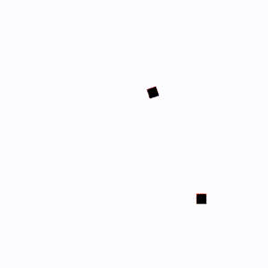

EECS498 笔记
课程视频
19fall 课程网站
课程时间表
19fall
教材 课程官方笔记(cs231n) 我的
Assignments
深度学习下的计算机视觉基础, 作为cs231n 的替代, 加大作业量
前置 Python 基础
(建议)配一个 GPU 版本的 Pytorch
(建议)配一个 Jupyter Notebook
如果不行, 课程也推荐你使用 Google Colab 完成作业
Lecture 1 介绍
业界主要用深度学习来做计算机视觉(从 2012 年的 Alexnet 开始)
深度学习是机器学习的一个子集
这节课的剩余部分讲了计算机视觉的发展历史
Lecture 2 图像分类
电脑看图像只是一个巨大的数字表格,
对图像的简单更改都可能会改变整个表格, 这是一个语义鸿沟(semantic
gap)

图像分类有多个挑战: 视角变化(viewpoint variation) / 类内变化(intraclass
variation) / 细粒度分类(fine-grained classification) /
背景干扰(background clutter) / 光照变化(illumination changes) /
变形(deformation) / 遮挡(occlusion) / etc.
图像分类是其他计算机任务的基石, 例如图像字幕(image captioning)
机器学习: 数据驱动的方法
收集数据 -> 训练分类器 -> 应用, 大体是下面这样的:
1 | def train(images, labels): |
最简单的分类方法 K最近邻算法(k-Nearest Neighbor)(kNN)
将测试集和训练集的每个图像使用一个相似度函数比较并输出相似度最高的对应的标签
需要用到一些距离度量(distance metric),
例如像素值的曼哈顿距离, 然后加起来之类的

这种算法不能满足我们对于测试高性能的需要, 而且的确太简单了
另一种 K最近邻 思想的算法是构造出一种决策边界(decision boundaries)

这种方法很容易被离群值影响
简单的优化是找 K 个最近邻居去个众数, 使得决策边界更加平滑
 距离度量也可以改为欧几里得距离使其更平滑
距离度量也可以改为欧几里得距离使其更平滑
K最近邻算法
可视化网站
这里的 K, 以及距离度量函数就属于超参数(hyperparameter), 不要用训练集或测试集来设置超参数, 更好的想法是把数据分为三部分: 训练集、验证集和测试集; 我们用验证集来决定超参数的设置, 只在最后在测试集上测试一次
一种更更好的方法是交叉验证,
训练代价会很昂贵, 但效果最好

随着输入空间的维度增加, 这个算法需要的数据量会对应指数级增加
Assignment 1 Pytorch & kNN
Pytorch
Pytorch 中数据的核心表现形式也是张量(tensor), 类似于
Numpy 的多维数组, 但具有更强大的功能, 例如支持 GPU
加速和自动梯度计算
张量的秩(rank)是数组的维度,
张量的形状(shape)是每一维的大小
我们直接以二维张量举例:
1 | # 通过 python list 创建二维张量 |
类似于 matlab, 有一些函数来很方便地创建特殊张量, 例如
torch.zeros torch.ones torch.eye
和 torch.rand, 分别创造全 0 张量, 全 1 张量, 单位矩阵和
[0,1] 随机数张量
例如 v = torch.full((2,3,4),7), 代表一个 shape 为 (2,3,4),
每一项都为 7 的张量
例如 x = torch.linspace(10,20,steps=6,dtype=torch.float64)
,
代表 x = tensor([10, 12, 14, 16, 18, 20]) 且
x.dtype == torch.float64
例如 v = torch.arange(10), 代表
v = tensor([0,1,2,3,4,5,6,7,8,9]), 直接 [0:10]
简单, 但不是张量
例如 torch.randint(low=0, high, shape)
创建一个每个数为整数, 在 [low, high) 之间, 有 shape 大小的张量
张量有不同的数据类型, 可以通过 .dtype 来查看(eg. int16,
int32, int64, float32, uint8, ...)
可以通过 .to(TYPE) 来转换类型,
eg. b = a.to(torch.float32) 或直接通过
b = a.float() 来转换为 float32
张量数组也可以和 python list 一样用 : 来进行切片,
对原张量的切片相当于原张量切片部分上的指针, 要想弄一个新张量得用
.clone() 函数
我们可以用一个 index list 来重新排列张量, 或者给张量的一些不同位置元素同时赋值:
1 | a = torch.tensor([[1, 2, 3, 4], [5, 6, 7, 8], [9, 10, 11, 12]]) |
在做切片的时候还可以用数学表达式来约束
1 | a = torch.tensor([[1,2], [3, 4], [5, 6]]) |
例: x 张量中小于 0 的元素数量统计
torch.sum(x<0).item()
在 Pytorch 中 view() 函数可以调整张量的 shape,
只要前后数据个数一样即可, 例如 a = a.view(2,2) 可以将 a
调整为 2x2 的张量, a = a.view(-1) 会把整个 a
张量展平为一维张量, view 并不是创建新张量, 其本质仍是一种浅拷贝,
reshape() 则是深拷贝, 有些情况下 view()
会报错, 因为view()
要求 shape 满足一定的条件
如果想要将数据降维, 可以用 flatten 方法, 格式为
torch.flatten(input,start_dim=0,end_dim=-1)
transpose() 方法可以交换张量的两个维度, 格式为
torch.transpose(input, dim0, dim1) 或
input.transpose(dim0, dim1) 若想调换更多维度, 就用 permute
函数, 格式为 permute(dims), 一次换所有维度
若只想转置二维矩阵, 就用 .t(), 交换张量的第 0 维和第 1
维
张量支持加减乘除、幂次、开平方、三角函数等运算,
运算都针对张量中的每个元素来对应进行
一些其他运算 sum()/mean()/min()/max()
可以针对整个张量或某几个维度进行, 可以返回值以及对应下标(如果存在)
一些特殊运算函数(如 mean()) 会压缩张量维度, 可以设置
keepdim = True 来避免:
1 | x = torch.randn(128, 10, 3, 64, 64) |
针对线性代数中矩阵的运算有另外的函数, 例如:
torch.dot: 计算向量的点积, 只对一维张量生效torch.mm: 计算矩阵之间的乘法torch.mv: 计算矩阵与向量的乘法torch.addmm/torch.addmv: 两个矩阵或矩阵与向量相乘，并将结果与第三个矩阵相加
torch.addmm(beta=1, mat, alpha=1, mat1, mat2, out=None) → Tensor, 即 \(out = \beta \;mat\;+\;\alpha(mat1_i \; @ \; mat2_i)\), 这里的 @ 指矩阵乘法
torch.bmm/torch.baddmm: 进行批量的矩阵乘法, 函数接受三维张量输入, 并将第一维视为矩阵个数, 后面两位视为矩阵的行数与列数
如果两个张量 shape 分别为 (n,1) 和 (1,m), 那样 * 运算会做矩阵乘法, 输出 shape 为 (n,m) 的张量
"广播"(broadcasting)
用于描述如何在形状不一的张量上应用算术运算,
在满足特定限制的前提下, 较小的张量"广播至"较大的张量,
使两者形状互相兼容, 规则要求:
- 每个张量至少有一个维度
- 迭代维度尺寸时, 从尾部的维度开始, 维度尺寸或者相等, 或者其中一个张量的维度尺寸为 1, 或者其中一个张量不存在这个维度
你可以使用 .to('cuda') 或者 .cuda()
指令将张量放到 gpu 上运算, 特定情形下速度会快上几十倍,
不知为什么我的电脑在有的任务上反而性能倒挂......
kNN 分类器
这部分为正式作业, 写一个在 CIFAR-10 上的 kNN 分类器
在本地安装环境的话缺啥安啥就行, google colab 相关的有些包改名了全部取消
import
测试集和训练集的 shape 为 (numbers, channels, height, weight), 假设我们取训练集的大小为 500, 则 shape 为 (500, 3, 32, 32) (RGB 图像的通道数为 3)
接下来我们要计算一个 shape 为 (train, test) 的距离张量 dists, 使用欧几里得距离度量, 尽量不要写二重循环因为 python 的 for 循环慢的要死, 我们应该把数据点集合为"向量"一起并行运算, 仅使用一重循环, 甚至不循环来提高效率, 这就需要用到"广播"的思想
1 | # x_train.shape == x_test.shape == (100,3,16,16) |
1 | # x_train.shape == x_test.shape == (100,3,16,16) |
1 | # x_train.shape == x_test.shape == (100,3,16,16) |
理论上来讲不循环最快但实际上我的单循环更快, 在 shape 均为 (500,3,32,32) 时, 我的双循环/单循环/无循环的用时为: 3.92s/0.1s/0.61s
计算完 dists 后要输出预测标签, pytorch 中有简单的 topk()
函数,
格式为
val, idx = torch.topk(input, k, dim=None, largest=True, sorded=True)
,
其中 dim 为要操作的维度, largest
表示返回最大或最小值, sorted 决定返回结果是否按顺序排列,
函数返回值张量与索引张量
1 | def predict_labels(dists, y_train, k=1): |
对于 CIFAR-10数据集, 在 k=1 时准确率有 27% 左右, 在 k=5 时会高上 0.4%
我们可以通过交叉验证来设置超参数 k, 把训练集分成多个集合,
每次选一个作为验证集, 剩下的为训练集, 然后在每个 k 上都跑一遍,
需要用到两个函数, torch.chunk(input, chunks, dim = 0)
将输入张量 (input) 沿着指定维度 (dim) 均匀的分割成特定数量的张量块
(chunks), 并返回元素为张量块的元组(tuple)以及
torch.cat(tensors, dim=0) 可以沿着维度拼接张量
现在我们来对不同的 k 做一次交叉验证:
1 | def knn_cross_validate(x_train, y_train, num_folds=5, k_choices=None): |
我们跑一遍:
1 | num_train, num_test = 5000, 500 |
可以得到:
1 | k = 1 got accuracies: [26.3, 25.7, 26.4, 27.8, 26.6] |

将所有的 k 的准确率平均值作比较, 我们就可以选出最好的 k 为 k=10 在整个测试集上跑了十五分钟后, 最后的准确率为 33.86%
Lecture 3 线性分类器
线性分类器是很多大型神经网络的基础
核心思想是一个函数 \(f(x,W)\), \(x\) 为图像, \(W\) 为权重, 形状为 (C, D), 其中 C 为分类数,
D 为图像 \(x\) 的维度
对于 CIFAR-10 而言, \(f\)
返回十个分类的分数
一般来讲, 有 \(f(x,W) = Wx + b\), \(b\) 是一个偏移量(bias),
可以增加拟合能力(不然固定过定点), 可以并入 \(W, x\) 中
从代数角度理解,
这就是矩阵与向量相乘后加上了一个向量作为偏移量, 如果不考虑偏移量, \(f(cx,W) = W(cx) = c \times f(x,W)\),
代表缩小图像会成比例改变分数, 但结果不变
从视觉角度理解, 我们抽出代表每个分类的 \(W\) 部分, 例如 \(W_{cat}, W_{dog},...\),
仅考虑这一部分与图像的作用,
线性分类器其实是在试图学习每类图像得分最高的"模板", 在 CIFAR-10
中是这样的:

这给了我们一种关于分类器的直觉,
比如说森林里的汽车可能因为背景的绿色更容易被分类为鹿或者是鸟
线性分类器只能对于一个类学习一种模板, 在上图中为了匹配不同模式的马,
它不得不构造一种类似双头马的模板, 无法很好应对类内变化
从几何角度理解,
你可以想象线性分类器是高维的一个超平面切割这个高维空间,
以二维(两个像素为例):

此时的分类器就是一条直线, 垂直于直线方向移动可以最快地使得图片趋向/远离某种分类
线性分类器无法解决异或问题,
你可以把整个异或问题想象为一个这样的平面 ,
显然无法找到一条直线划分两个类别(0/1)
,
显然无法找到一条直线划分两个类别(0/1)
我们如何确定权重 \(W\) ？
(1). 用损失函数(loss function)量化 \(W\) 的好坏程度
(2). 通过优化(optimization), 找到最小损失的 \(W\)
损失函数(loss function), 也叫目标函数(objective
function), 奖励函数(reward function), etc.
对于数据点 \(x_i\) 与标签 \(y_i\), 其损失为 \(L_i(f(x_i,W),y_i)\), 总损失为 \(L = \displaystyle\frac{1}{N} \sum
L_i(f(x_i,W),y_i)\)
SVM Loss 函数: 核心思想就是正确的类的 loss
应该最小, 设 \(s = f(x_i, W)\)
为得分(s = Wx(+b)), 则 \(L_i = \sum_{j \neq
y_i} {\rm max}(0,s_j-s_{y_i}+ \Delta)\) , 针对不对的类别 \(j\) 有一个 loss, 至少比正确类型的得分小
\(\Delta\)

例如在这里, frog 类的得分并不是 frog 中最高的, 那么别的类多出来的得分
+1 将成为损失的一部分
总的 loss 为 (2.9 + 0 + 12.9)/3 = 5.27
如果初始的分数全部随机, \(\sum L_i \approx
(N-1)\Delta\)
如果找到了一个 \(W\), 其对应的 \(L = 0\), 则 \(nW\) 的 \(L\) 也会为 0
这两个 \(W\)
矩阵我们应该选哪个呢？这引入了正则化(regularization)的想法:
给损失函数一些限制,
通过某种规则去规范它们防止在接下来的循环迭代中过拟合,
或者加入一些额外偏好(偏向选择某个 \(W\)
矩阵)
一般来讲你要设置一些超参数 \(\lambda\)
, \(\lambda R(W)\) 即为加在 \(L\) 后面的正则项
一个小例子, L2 正则(欧几里得)中 \(R(W) =
\sum_k \sum_l W_{k,l}^2\)
这时候若 \(w_1=[1,0,0,0],
w_2=[0.25,0.25,0.25,0.25]\), 则我们会优先选择 \(w_2\)
交叉熵损失(cross-entropy loss): 什么是分数?
我们可以在这里将分数解释为概率分布
Softmax 函数将分数变成概率, 设分数为 \(s\), 则 \({\rm
Softmax}(s) = \displaystyle\frac{e^{s}}{\sum e^{s_i}}\) , 先取
exp 再标准化, 保证了概率和为 1 我们再定义 loss, \(L_i = -{\rm log}({\rm Softmax}(s_i))\),
这种定义和最大似然估计有关,
这里的 log 指 ln
这种 loss 函数会让 \(L_i = 0\)
变得几乎不可能, 任何微扰都能改变 \(L_i\), 如果初始的分数全部随机, \(\sum L_i = -log(N)\)
Lecture 4 最优化
感谢 ZEEKANG -
知乎 与 呼姆奴库 - 知乎
的笔记与解析
最优化(Optimization): 本质是这个式子 \(w^{*} = {\rm arg\;min}_wL(w)\),
即寻找能取到 \({\rm min} \; L(w)\) 的
参数(argument)
简单的方法: 随机猜
聪明的方法: 沿着损失函数的梯度(gradient)反方向迭代更新,
因为 梯度(在每个维度上偏导数所形成的向量)
表示的是函数在某一点的最陡上升方向,
所以沿着梯度的反方向移动可以减少损失函数的值, 从而优化模型
这里面有三个超参数:
- 初始化权重
- 迭代次数
- 对这个梯度的学习程度(learning rate), 因为计算出的梯度是局部的
聪明方法告诉我们 \(W = W - \eta \nabla_WL\), 其中 \(\eta\) 表示学习程度, \(\nabla\) 代表梯度算子(gradient operator), 表示对多元函数在各个坐标方向上的偏导数构成的向量, 在实践中我们用反向传播算法(backpropagation)来算梯度(见 Lecture 6), 这种梯度叫做解析梯度(analytic gradient), 数值梯度一般仅用来验证, 下面是实现的大体模板:
1 | w = initialize_weights() |
假设我们已经有方法计算单个输入的 loss 值的梯度，那么总梯度为: \[
\nabla_WL(W) = \frac{1}{N}\sum\limits_{i=1}^{N} \nabla_W L_i(x_i,y_i,W)
+ \lambda \nabla_W R(W)
\] 随着 \(N\) 的变大,
这种开销无法承受, 在实践中我们一般使用随机梯度下降(Stochastic
Gradient Descent)(SGD),
随机选择一小批样本(batch)来计算出近似梯度, 所以现在又增加了两个超参数:
批大小(batch size) 和 采样方式(data
sampling)
batch size 一般选择 32/64/128, 越大越慢也越好
第二种问题是鞍点(saddle point), 也和黑塞矩阵有关, 在函数的黑塞矩阵在梯度为零时特征值有正有负称为鞍点

此时 SGD 将局部最小值当全局最小值了
第三个问题是, 因为我们使用的是数据集的一部分,
所以估计出的梯度可能噪音比较大(乱抖)
所以我们要给 SGD 加上动量(momentum)优化,
使用物理思想, 建立一个速度的概念, 对梯度平滑处理

动量的使用可以帮助优化算法跳出局部最小值或鞍点。在这些区域, 纯 SGD
可能会陷入停滞, 因为梯度接近 0。但是, 如果有足够的累积动量,
算法可能会由于之前的"惯性"而跨过这些最小值, 达到更低的损失区域
动量因子 \(\rho\) (通常设置为接近 1
的值, 如 0.9 或 0.99) 决定了过去动量的保留程度。较高的 \(\rho\) 值意味着保留更多的过去信息,
可以在一定程度上加快学习速度
在此基础上, 我们可以继续优化, 不使用当前点的梯度与速度合成,
而是直接"展望"速度向量指向点的梯度来更新, 可以帮助我们更好地调整方向,
这称为 Nesterov momentum

数学推导是这样的: \[
\begin{aligned}
&\tilde x_t = x_t + \rho v_t\\
&v_{t+1} = \rho v_t - \alpha\nabla f(\tilde x_t)\\
&\tilde x_{t+1} = \underline{\tilde x_t - \rho v_t}_{x_t} + (1 +
\rho)v_{t+1}
\end{aligned}
\] 关于梯度还有一些直觉并抽象的算法:
AdaGrad 算法对 \(W\)
每个维度的梯度基于该维度梯度的历史累积平方和进行缩放
通过这种方式, AdaGrad 算法为每个参数独立调整学习率,
通常被称为"自适应学习率"。如果一个参数的梯度一直很大,
其累积的梯度平方和也会很大, 导致该参数的更新步长变小,
这有助于减小在该维度上的震荡。反之,
如果一个参数的梯度较小或者不经常发生变化, 其梯度平方和较小,
使得该参数的更新步长相对较大, 从而加快学习进度
1 | grad_squared = 0 |
在此基础上, 为了避免梯度平方(grad_squared)累积过大导致步长过度减小的问题, 我们加入一个衰减因子来防止其无限增长, 称为 RMSProp, 或俗称 "Leak AdaGrad"
1 | grad_squared = 0 |
如果再结合一下动量呢？隆重介绍 Adam, 你可以看作 RMSProp + momentum
1 | moment1, moment2 = 0, 0 # 两个动量 |
这里我们要增加一些矫正, 防止初始时刻我们除以一个非常接近 0 的
moment2
当beta1 = 0.9, beta2 = 0.999时，learning_rate 设置为 1e-3/5e-4/1e-4
对于许多模型来说很好
以上的这些算法都只使用了一阶梯度, 也有有关二级梯度的算法, 能够让算法能够选择更加合适的更新方向和步长, 从而加快收敛速度, 总体思想是将 \(f(x)\) 在 \(x_t\) 二阶泰勒展开并带入 \(x_{t+1}\), 这里是具体推导, 这称为 L-BFGS 算法, 由于黑塞矩阵元素数量过多且矩阵求逆复杂度过高, 实践中很少使用二阶优化
Lecture 5 神经网络
如何克服线性分类器的局限性? 一种方法是特征变化(feature transform):

一种简单的特征变化是颜色直方图(color histogram),
通过不同颜色的出现频率分类, 抛弃空间信息
另一种方法是定向梯度方法的直方图(Histogram of Oriented
Gradients)(HoG)，通过捕捉图像中局部区域的边缘方向信息来描述物体的形状和轮廓,
抛弃颜色信息

这些方法的本质都是提取特征并调整特征以获得更高的得分
神经网络的本质也类似, 只不过它有多层, 一个两层的神经网络可以这么表示:
\[
f = W_2 {\rm max}(0,W_1x),\;W_2 \in \mathbb{R}^{C \times H}, W_1 \in
\mathbb{R}^{H \times D}, x \in \mathbb{R}^D
\] 这里我们省略了每层的偏移量, 其中 \(D\) 为原始的图片 flatten 后的大小(eg.
3x32x32=3072), \(x\) 是一个 \(\mathbb{R}^D\) 上的向量表示图片

这叫做全连接网络(fully-connected neural
network)或者多层感知器(multi-layer
perceptron)(MLP) 类似于线性分类器, \(W_1\) 给出了 100 个模板,

这时候就可以对于一个类学习多种模板了,
比如说红框部分是两种不同朝向的马, 这叫做分布表示(distributed
representation)
\(W_2\)
是将隐层的特征表示映射到具体的类别预测,
计算出每个类别的分数(某种加权重组)
为什么在 \(f\) 中要取 \(max(0,W_1)\)?
这是激活函数(activation function)的一种, \({\rm ReLU}(x) = {\rm max}(0,x)\),
激活函数是非线性函数, 如果不施加的话我们得到的还是一个线性分类器 \(f = W_2W_1 x = Wx\)
还有很多的激活函数:
 通过激活函数进行特征变化, 我们得到了新的数据分布,
就可以通过线性分类器分类了
通过激活函数进行特征变化, 我们得到了新的数据分布,
就可以通过线性分类器分类了

随着神经网络的层数增加, 就可以表示出更加复杂的决策边界,
增加正则化项并调整 \(\lambda\)
可以防止过拟合(不要通过减少层数来防止过拟合), 你可以在在线
2D 数据点分类这里试一试

在一个有界的输入空间中, 神经网络可以逼近任何函数, 你可以想象无数的 ReLU 图像拼接成一个函数, 但即使是 kNN 也能逼近所有函数, 这个性质并没有保证神经网络在实战中能学习任意函数
在讨论最优解, 优化问题的收敛时, 我们常用的是凸函数(convex function), \(f = x^2\) 就是凸的 当 \(f(tx_1+(1-t)x_2) \leq tf(x_1) + (1-t)f(x_2)\), 其中 \(f:X \subseteq \mathbb{R}^N \rightarrow \mathbb{R}, x_1,x_2 \in X, t \in [0,1]\)
几何意义可以这样理解, 以 \(f = x^2\) 为例, 绿线永远在蓝线上面:
凸函数有一些很好的性质:
局部最值即为全局最值、可以使用其他优化算法、收敛更快并保证收敛
之前我们对线性分类器的优化(Softmax, SVM, ...)就是一个凸函数
但是任何层的神经网络没有证明有这样的性质。所以神经网络的优化需要非凸函数优化。这说明我们不能保证它一定会收敛,
但是, 凸函数的一些优化方法对神经网络优化经常有效, 奇妙
Lecture 6 反向传播
可以先看 3blue1brown
的视频建立一些基础了解和直觉
在优化算法中, 无一例外需要计算梯度
由于直接推导梯度的解析式过于繁杂, 数值计算梯度又不够精确,
所以我们选择反向传播(backpropagation)来计算梯度,
个人理解其本质就是复杂一点的链式法则

计算图帮助我们分解函数的计算, 见上, 蓝色节点为得分, 传入红色节点(SVM
loss 计算节点)后得到 data loss, 加上 \(R(W)\) 正则项后得到最终损失

以 \(f(x,y,z) = (x+y)z\) 为例, 前向传播(forward pass)指计算 \(f\) 的过程, 而反向传播(backward pass)指计算输出关于每个输入的导数(部分梯度), 即 \(\displaystyle\frac{\partial f}{\partial x}, \displaystyle\frac{\partial f}{\partial y}, \displaystyle\frac{\partial f}{\partial z}\)
一开始, \(\displaystyle\frac{\partial f}{\partial f} =1\); 然后因为 \(f = qz\), 所以 \(\displaystyle\frac{\partial f}{\partial z} = q = 3\), 同理 \(\displaystyle\frac{\partial f}{\partial q} = z = -4\); 接着 \(\displaystyle\frac{\partial f}{\partial y} = \displaystyle\frac{\partial q}{\partial y} \displaystyle\frac{\partial f}{\partial q} = 1 \times (-4) = -4\), 同理 \(\displaystyle\frac{\partial f}{\partial x} = \displaystyle\frac{\partial q}{\partial x} \displaystyle\frac{\partial f}{\partial q} = -4\)
因为反向计算梯度, \(\displaystyle\frac{\partial f}{\partial
q}\) 称为上游梯度(upstream gradient), 而 \(\displaystyle\frac{\partial f}{\partial
x}\) 称为下游梯度(downstream gradient), \(\displaystyle\frac{\partial q}{\partial
x}\) 称为局部梯度(local gradient),
你可以在计算图上看到, 边的上部为函数计算结果, 边的下部为各部分梯度
注意上游梯度和下游梯度是相对的, 根据当前的计算而定,
这种传播就不需要考虑全局的函数结构, 只需要计算自己的一小部分

有时候我们不用把整个式子拆成单步的运算, 例如蓝框的部分为激活函数
\(\sigma(x) =
\displaystyle\frac{1}{1+e^{-x}}\), 它的梯度有:
\(\displaystyle\frac{\partial}{\partial x}
\left[\sigma(x)\right] = (1 - \sigma(x))\sigma(x)\) , 所以注意
\(\sigma(x)\) 前后的上下游梯度, 有 0.2
= (1-0.73)*0.73*1
对于一些简单运算有一些简单的算梯度方法, 可以见下图

现代的 API 将各种类型的门, 以及反向传播时不同门的梯度计算方法封装起来, 这样修改 loss function 时只需要修改 loss function 的代码, 其他地方不需要任何修改, pytorch 都帮你定义好了, autograd 真是好用啊
我们刚刚讨论了最简单的输入为实数的情况,
但若数据为向量甚至高维张量时怎么做呢？
当 \(x \in \mathbb{R}^N, y \in
\mathbb{R}\) 时, 导数是梯度, \(\displaystyle\frac{\partial y}{\partial x} \in
\mathbb{R}^N\), 每个分量表示 \(y\) 对 \(x_i\) 的偏导
当 \(x \in \mathbb{R}^N, y \in
\mathbb{R}^M\) 时, 导数是雅可比矩阵(Jacobian
matrix), \(\displaystyle\frac{\partial y}{\partial x} \in
\mathbb{R}^{N \times M}\) , \(\displaystyle\frac{\partial y_n}{\partial
x_m}\) 表示 \(y_n\) 对 \(x_m\) 的偏导

以向量为例, 设 \(x, y, z\)
的维度分别为 \(D_x, D_y, D_z\),
注意到损失 \(L\) 一直是一个标量,
数据的计算结果与梯度维度是对应的
雅可比矩阵一般都是稀疏的, 以 ReLU(x) = max(0,x) 为例:
 因为 ReLU 函数是元素对元素(elementwise)的,
所以其雅可比矩阵仅在对角线处有取值, 对于上述情况,
矩阵乘法可以简化为:
因为 ReLU 函数是元素对元素(elementwise)的,
所以其雅可比矩阵仅在对角线处有取值, 对于上述情况,
矩阵乘法可以简化为:
\[
\left( \displaystyle\frac{\partial L}{\partial x}\right)_i =
\left\{
\begin{matrix}
\left(\displaystyle\frac{\partial L}{\partial y}\right)_i\;,\;\;if\;x_i
> 0\\
0,\;\;otherwise
\end{matrix}
\right.
\] 假设我们正在做矩阵乘法, 有 \(y =
xw\), 其中 \(y\) 的形状为 (N,
M), \(x\) 的形状为 (N, D), \(w\) 的形状为 (D, M),
假设要算 \(\displaystyle\frac{\partial L}{\partial x} = \displaystyle\frac{\partial L}{\partial y} \displaystyle\frac{\partial y}{\partial x}\), 则雅可比矩阵 \(\displaystyle\frac{\partial y}{\partial x}\) 的形状为 (N,D,N,M) 或者说是 (N*D,N*M), 显然不可接受。
但因为 \(y_{i,j} = \sum x_{i,k}w_{k,j}\), 又因为 \(\displaystyle\frac{\partial y}{\partial x_{i,j}}\) 由 \(\displaystyle\frac{\partial y_{1,1}}{\partial x_{i,j}}, \displaystyle\frac{\partial y_{1,2}}{\partial x_{i,j}}, ..., \displaystyle\frac{\partial y_{n,m}}{\partial x_{i,j}}\) 组成,
又实际上由 \(\displaystyle\frac{\partial y_{i,1}}{\partial x_{i,j}} = w_{j,1}, \displaystyle\frac{\partial y_{i,2}}{\partial x_{i,j}} = w_{j,2}, ..., \displaystyle\frac{\partial y_{i,m}}{\partial x_{i,j}} = w_{j,m}\) 构成(除 \(y_i\) 行外其他行无贡献),
所以有 \(\displaystyle\frac{\partial y}{\partial x_{i,j}} = w_j\), 有 \(\displaystyle\frac{\partial L}{\partial x_{i,j}} = \displaystyle\frac{\partial y}{\partial x_{i,j}} \displaystyle\frac{\partial L}{\partial y} = w_j \cdot \displaystyle\frac{\partial L}{\partial y_i}\),
所以有 \(\displaystyle\frac{\partial L}{\partial x} = \displaystyle\frac{\partial L}{\partial y}\; w^T\) , 在形状上看为 (N, D) = (N, M) * (M, D), 同理有 \(\displaystyle\frac{\partial L}{\partial w} = x^T \displaystyle\frac{\partial L}{\partial y}\)
最好还是看看讲义 PPT, 我们相当于做了 reverse-mode automatic differentation 来避免算一些抽象大小的雅可比矩阵
反向传播的思想也可以用来计算二阶梯度黑塞矩阵, 也就是梯度变化的速度
 这里仅做了解
这里仅做了解
Assignment 2 线性分类器 & 双层神经网络
线性分类器
写一个在 CIFAR-10 上的线性分类器, 分别尝试使用两种损失函数: SVM 和 Softmax
SVM
先要算 loss 以及损失函数 \(L\) 的梯度 dW, 因为对于单张图片 \(L_i = \sum\limits_{j \neq y_i} {\rm max} (0,W_{j,:} \cdot x_i - W_{y_i,:} \cdot x_i + 1)\) , 所以对于 \(N\) 张图片的一个 batch, 有:
1 | def svm_loss_naive(W, X, y, reg): |
当然这样很慢, 我们向量化数据, 继续利用广播思想, 不写显式循环, 有:
1 | def svm_loss_vectorized(W, X, y, reg): |
不写显式循环在我的机子上能快上最高 160 倍
广播, 张量套张量后的 shape 乱成了一坨, 没事可以输出 .shape
来调试
写完 loss 后写分类器就简单了, 但是你会发现准确率 10% 都不到,
还不如纯蒙呢, 于是要去调超参了
这部分建议看看作业代码, 我们先把线性分类器封装起来, 再封装 SVM loss
类损失函数(因为下文用softmax), 超参数主要是 learning_rate 和
regularization_strengths, 把迭代次数调小一点,
跑个二重循环来找一下合适的超参数就行, 但是艹了, 我的模型准确率 30%
都不到, 根据 SVM 写法的不同比别人的差挺多
Softmax
对于单张图片 \(x_i\) , \(L_i = - {\rm log} \left( \displaystyle\frac{e^{s_{y_i}}}{\sum_j e^{s_j}}\right) = -s_{y_i} + {\rm log} \sum\limits_j e^{s_j} = -W_{y_i}x_i + {\rm log} \sum\limits_j e^{W_j x_i}\)
我们开导, 对于每一个 \(y_i\) 项, 有一个 \(-x_i\), 后面的 log, sum 一坨导出来都一样, 为 \(\displaystyle\frac{e^{W_j x_i}}{\sum\limits_j e^{W_j x_i}} \cdot x_i\) , 这个 \(\displaystyle\frac{e^{W_j x_i}}{\sum\limits_j e^{W_j x_i}}\) 其实就是概率, 设为 \(p_{i,j}\), 故:
\[ \displaystyle\frac{\partial L}{\partial W_j} = \sum\limits_{i=1}^{N} \left\{ \begin{matrix} (p_{i,j}-1)x_i,\;\;if\;j=y_i\\ p_{i,j} x_i,\;\;otherwise \end{matrix} \right. \]
正确分类 \(i = y_i\)
的概率会多减一个 \(x_i\)
在编写代码前还有一些数值计算的问题, 直接算 \(e^{W_jx_i}\) 显然不可接受(过大),
根据给出的扩展资料, 有:
\[
\displaystyle\frac{e^{W_j x_i}}{\sum\limits_j e^{W_j x_i}} =
\displaystyle\frac{Ce^{W_j x_i}}{C\sum\limits_j e^{W_j x_i}} =
\displaystyle\frac{e^{W_j x_i+ {\rm log}\;C}}{\sum\limits_j e^{W_j
x_i+{\rm log}\;C}}
\]
假设我们选择 \({\rm log}\;C = - {\rm
max}_js_j\), 按照最大值左移 \(s\) 张量, 则 \(s_i \leq 0\), \(e^{s_i} \leq 1\)
不会越界(过小省去无问题)
这里我们直接给出无循环的代码, 各种符号定义与 SVM 一致:
1 | def softmax_loss_vectorized(W, X, y, reg): |
同理封装后调超参, softmax 需要的 learning_rate 和 regularization_strengths 偏低, 最后我调出来了 37.48% 的准确率, 我很满意了……
双层神经网络
写一个在 CIFAR-10 上的双层神经网络, 使用 Softmax 损失函数
总体而言, \(f = W_2 {\rm max}(0,W_1x+b_1) +b_2\), 设 \(h = {\rm max}(0,W_1x+b_1),\;s=f\), 我们正向传播算 loss, 反向传播算梯度, 先算 ds, 再算 dW2, db2, 最后算 dW1, db1, 这里着重讲一下反向算梯度的部分
根据 \(L_i = -s_{y_i} + {\rm log} \sum\limits_j e^{s_j}\), 有: \(\displaystyle\frac{\partial L}{\partial s_j} = \sum\limits_{i=1}^{N}\left\{\begin{matrix} p_{i,j}-1,\;\;if\;j=y_i\\p_{i,j},\;\;otherwise\end{matrix}\right.\)
根据 \(s = W_2h+b_2\), 有 \(\displaystyle\frac{\partial L}{\partial W_2} = h \times \displaystyle\frac{\partial L}{\partial s}, \displaystyle\frac{\partial L}{\partial b_2} = 1 \times \displaystyle\frac{\partial L}{\partial s}, \displaystyle\frac{\partial L}{\partial h} = W_2 \times \displaystyle\frac{\partial L}{\partial s}\), 记得加上正则化项
如果把 shape 列出来, 有 \(\underline{s}_{[N,C]} = \underline{h}_{[N,H]} \underline{W_2}_{[H,C]} + \underline{b_2}_{[C,]}\) 注意到 $ $ 和 $ $ 大小对不上, 但是你仔细一想发现 \(\displaystyle\frac{\partial L}{\partial s}\) 其实是被广播到 \([N,C]\) 大小的, 其原始大小只有 \([C,]\) 于是你还原回去就行了, 在求其他局部梯度时也要考虑 shape 问题
根据 \(h = {\rm max}(0,W_1x+b_1)\), 假设 \(h' = W_1x+b_1\), 我们先根据反向传播运算表去掉了 \(\rm max\), 得到了 \(\displaystyle\frac{\partial L}{\partial h'}\) , 有:
\(\displaystyle\frac{\partial L}{\partial b_1} = \displaystyle\frac{\partial L}{\partial h'}, \displaystyle\frac{\partial L}{\partial W_1} = x \times \displaystyle\frac{\partial L}{\partial h'}\), 这里 \(\displaystyle\frac{\partial L}{\partial b_1}\) 要对 \(\displaystyle\frac{\partial L}{\partial h'}\) 的第零维(dim=0)取平均
1 | def nn_loss_part2(params, X, y=None, reg=0.0): |
这里的参数 H 是隐藏层(hidden layer)的大小, H 越大(网络容量越大), 拟合越好 如果初始模型在训练集和验证集上的表现非常相似, 这说明模型是欠拟合的, 如果我们增加网络容量, 其性能可能会提高

上面是 H = 2, 8, 32, 128, 512 时在训练集和验证集上的准确率, 每一个
epoch 代表使用训练集的全部数据进行一次完整训练
模型训练和验证准确度之间的小差距的另一个解释是正则化,
如果正则化系数(reg)过高, 则模型可能无法拟合训练数据, 同理,
学习程度(learning rate)也会对模型产生影响
接下来我们就要调试这三个超参, 封装啊, 三重循环啊, 最后在测试集跑出了
51.35% 准确率
Lecture 7 卷积神经网络 CNN
将二维图像拍平为一个 3072 大小的一维数组并不尊重图像的二维空间结构, 为了解决这个问题, 我们引入一些可以用在二维空间上的结构/运算, 例如卷积层、池化层、标准化层等
全连接层(fully-connected layer)完全破坏了空间结构
 而卷积层(convolution layer)不同,
它接受一个三维的张量(通道数(Channels)/高度/宽度)作为输入图像,
将其与卷积核/滤波器(filter)进行点积运算,
卷积核在输入图像上移动, 计算每个位置的点积,
从而生成特征图(feature map)
而卷积层(convolution layer)不同,
它接受一个三维的张量(通道数(Channels)/高度/宽度)作为输入图像,
将其与卷积核/滤波器(filter)进行点积运算,
卷积核在输入图像上移动, 计算每个位置的点积,
从而生成特征图(feature map)

卷积核在每个位置上的运算会返回一个数字(点积得到) \(w^Tx+b\),
所有的数字构成一层激活图(activation map),
可能有不同的卷积核, 所有的激活图构成特征图

具体来讲, 若输入的 shape 为 \((N,C_{in},H,W)\), 则卷积核的 shape 为 \((C_{out},C_{in},K_w,K_h)\), 输出的 shape 为 \((N, C_{out},H',W')\), 在这里我们没有额外操作, 于是 \(H' = H-K_h+1, W'=W-K_w+1\)
卷积神经网络不是在学习图像的模板, 而是学习图像的边缘与颜色  上图是卷积层的架构, 我们仍要加入激活函数否则卷几次都和卷一次没区别,
我们可视化了 Alexnet 第一层的 64 个卷积核, 有水平边缘、垂直边缘,
有不同的频率, 有对立颜色。你可以理解为卷积输出了特征向量的网格
上图是卷积层的架构, 我们仍要加入激活函数否则卷几次都和卷一次没区别,
我们可视化了 Alexnet 第一层的 64 个卷积核, 有水平边缘、垂直边缘,
有不同的频率, 有对立颜色。你可以理解为卷积输出了特征向量的网格
为了防止图像越卷越小, 最终无法开卷, 我们需要在图像边缘添加额外宽度的填充(padding), 一般填 0 就行, 设填充宽度为 P, 则对于 H 有 \(H' = H-K_h+1+2P\), 对于 W 也一样, 所以一般设置 \(P=(K-1)/2\), 这样图像大小不会变化
另一个有用的概念是感受野(receptive fields),
输出图像的一个元素实际上只有输入图像的部分区域(K*K)决定,
这块区域就叫做感受野。当我们堆叠卷积层时, 假设有 L 层,
则感受野为(1+L*(K-1)), 如果图像过大(1024*1024)而卷积核较小,
我们可能需要堆叠大量卷积层才能让最终输出的一个元素"感受"到整个图像
这又引入了步长(stride)的概念, 我们默认的步长为 1,
卷积核必须遍历原始图像每个(K*K)的子图像进行点积运算, 如果提高步长,
跳过一些子图像, 感受野会增长得很快, 图像也会缩小得很快
假设输入宽度为 W, 卷积核大小为 K, 填充宽度为 P, 步长为 S, 输出宽度为
(W-K+2P)/S+1, 设置 S 的时候一般要保证输出宽度为整数,
不行的话就要有截断了
有的时候我们会用 1*1 大小的卷积核, 这就相当于做线性操作了, 这种结构叫做Network In Network, 可以实现多个特征图(feature map)的线性组合, 实现跨通道的信息整合
有二维的卷积, 也有一维、三维的卷积, 定义都类似, 一维可以处理文本和音频, 三维可以处理点云数据
在 pytorch 中有专门的 Conv2d 函数来处理二维卷积
下面介绍池化层(pooling layers),
池化层可以在神经网络中下采样(downsampling),
卷积层也可以下采样, 但是池化层不学习任何新的参数,
只有三个超参数在起作用: 核大小, 步长和池化函数(max,avg,...)

上图是一个池化的例子, 图中核大小与步长一样为 2, 池化区域不重叠,
我们使用 max pooling 作为池化函数, 也就是取最大值出来
max 操作具有不变性, max pooling 相当于允许"模型中的少量平移",
对特定的任务有效
max pooling 引入了非线性, 理论上我们以及不用紧接着引入激活函数了,
但一般还是会引入
有了这些层后我们就能构建简单的卷积神经网络了, 以经典的 LeNet-5
为例, 一般是一些卷积层后面跟上一些全连接层:
 可以注意到在我们经过整个网络时, 我们倾向于减小空间尺寸并增加通道尺寸
可以注意到在我们经过整个网络时, 我们倾向于减小空间尺寸并增加通道尺寸
标准化层(normalization
layers)帮助我们更好地训练神经网络(加速),
有了标准化就可以提高学习程度
如果我们想要使层符合一些目标分布, 比如说平均值为 0, 单位方差(unit
variance)(将特征的尺度统一为相似的范围), 这叫做批量归一化(Batch
Normalization)(BN)
 最后为了防止除以 0 在分母加入了 \(\epsilon\)
最后为了防止除以 0 在分母加入了 \(\epsilon\)
直接归一化会使得模型的学习能力受到一定限制, 因为输出被严格限制在均值为 0
和方差为 1 的分布中, 为了恢复模型的表达能力, BN
还引入了两个可学习的参数: 缩放参数 \(\gamma\) 和偏移参数 \(\beta\)
这两个参数负责将归一化后的数据进行线性变化: \(y_{i,j} = \gamma_j \hat{x}_{i,j} +
\beta_j\), 若训练出来后发现 \(\gamma =
\sigma, \beta = \mu\), 则说明不需要归一化
批量归一化存在缺陷, 在测试阶段, 由于无法像训练阶段那样获取 batch
的均值和方差, 因此使用的是在训练阶段累积的全局均值和方差, 此时 \(\gamma, \beta\) 是常量,
所以这其实是一种线性运算, 可以和卷积操作放一起
还有一些标准化方法, 例如 layer norm(在特征维度标准化), instance
norm(仅在空间维度平均) 和 group norm,
有一张图很好体现了它们的区别, 蓝色部分为标准化部分:

不同标准化方法有不同的使用场景, 这里按下不表 一个可视化的在 CIFAR-10 上的卷积神经网络 demo
Lecture 8 CNN 架构
卷积神经网络的组成元素主要包含卷积层、池化层、全连接层、激活函数和归一化方法, 然而怎么结合这些元素构成较好性能的网络是一个问题, 这节课以 ImageNet 每年的比赛为线索, 介绍前人经典的卷积神经网络(CNN)
Alexnet:
五层卷积层、Max Pooling 方法、三层全连接层、ReLU 激活函数、分在两个 GPU
上跑
 图中省略了紧跟在卷积层(conv)后的激活函数 ReLU
图中省略了紧跟在卷积层(conv)后的激活函数 ReLU
这里的 params 指可学习参数的数量, 以 conv1 层举例,
\({\rm params} = \underline{C_{out} \times
C_{in} \times K \times K}_{weight\;shape} + {\rm biases}= 64 \times 3
\times 11 \times 11 + 64 = 23296 \approx 23k\)
这里的 flop 指浮点运算数(一次乘法加上一次加法算一次浮点运算)
${} = {} = (C_{out} H' W') (C_{in} K K) $
\({\rm flop} = (64 \times 56 \times 56) \times
(3 \times 11 \times 11) = 72855552 \approx 73M\)
卷积层主要开算, 而池化层需要的计算较少以至于被舍去了
在第一个全连接层(fc1)中, params 突然大幅增加, 因为展平后数量级上升了,
9216 * 4096 = 37748736
左边层数的架构怎么想出来的？硬试出来的！这我学个毛
我们可以学习的是, 右边的内存、params 和 flop 显现出一些趋势
 内存主要前期用, params 在全连接层多, flop 在卷积层多
内存主要前期用, params 在全连接层多, flop 在卷积层多
在 Alexnet 后 ImageNet 比赛下一年的冠军是 ZFnet, 基本就是大一号的 Alexnet, 体现一种趋向: 更大的网络更好
从 2014 年开始, 人们不再追求这种 Ad hoc 的网络配置,
手动调整每一层的大小, 而是转向一种更规范的设计理念, 下面介绍 VGG 网络架构  卷积层都是
3*3 的卷积核, 步长与填充为 1, 池化层都是 2*2 的核大小, 步长为 2 的
卷积层都是
3*3 的卷积核, 步长与填充为 1, 池化层都是 2*2 的核大小, 步长为 2 的
固定经历五个阶段的卷积(conv-conv-pool), 在池化层后翻倍通道数量
这个网络的可解释性更强一点, 比起用一个 5*5 的卷积核, 花费 25, 不如用两个
3*3 的卷积核代替, 效果一样(插入更多 ReLU 后效果甚至更好), 但花费为 2*3*3
= 18, 同理, 7*7 的卷积核不如三个 3*3 的卷积核,
我们就不用关心核大小了
在池化后翻倍通道数量, 这时候内存会变为原来的 1/2 而不是 1/4,
和前面的卷积层相比 flop 不变,
这里的设计思想就是希望让每个卷积层有相同数量的 flop 运算
和 Alexnet 相比, VGG 是一个更加巨大的网络

再介绍一下其他网络架构, GoogleNet 希望更高的网络效率,
于是它进行了快速的下采样:
 原始图像从 224*224 到 28*28, GoogleNet 的开销平均仅有 VGG 的 1/10
左右
原始图像从 224*224 到 28*28, GoogleNet 的开销平均仅有 VGG 的 1/10
左右
GoogleNet 还引入了一种模块叫做 inception module,
你可以在上图的右侧见到这个模块有并行的计算分支
为了避免核大小这个超参数, 和 VGG 不同的是, GoogleNet
同时进行了不同核大小的卷积, GoogleNet 还使用了 1*1
大小的卷积核来减少通道数量
与 max pooling 不同, GoogleNet 使用了全局平均池化(global average pooling), 让池化层的核大小与此时的图像大小相同, 每个通道只保留了一个元素, 相当于替代了一层全连接层, 这样可以减少全连接层巨大的可学习参数
GoogleNet 的时代没有批量归一化, 为了训练大型网络引入了丑陋的辅助分类器(auxiliary classifier), 生成不同的分数来帮助 GoogleNet 收敛
2015 年出现了残差神经网络(Residual Neural Network),
ResNet 赢得了那年的
ImageNet 比赛, 一年内神经网络的层数从 22 变成了 152,
这是怎么做到的？
假设我们只用批量归一化来训练神经网络, 你会发现 56 层的网络比 20
层的网络表现更差, 但 56 层网络应该能模拟 20 层网络,
只要弃用一些层让它们为恒等函数就行, 欠拟合说明了它不能完成这些学习,
也就是不能学习恒等函数
 ResNet 主要使用残差块(residual block)构建,
我们加入了一些"捷径", 如果这些卷积层的权重为 0,
则我们就能模拟恒等函数来输出 x, 这样也更有利于梯度的反向传播, ResNet
也借鉴了 GoogleNet, 使用了激进的下采样
ResNet 主要使用残差块(residual block)构建,
我们加入了一些"捷径", 如果这些卷积层的权重为 0,
则我们就能模拟恒等函数来输出 x, 这样也更有利于梯度的反向传播, ResNet
也借鉴了 GoogleNet, 使用了激进的下采样
残差块也有多种, 普通块就是由两个 3*3 的卷积层加上捷径构成的,
瓶颈块(Bottleneck block)由 1*1, 3*3, 1*1
的三个卷积层构成, 并在开头和结尾改变通道数
 下图是五种 ResNet 的数据:
下图是五种 ResNet 的数据:
 我们可以继续改进残差剩余网络, 比如将多个瓶颈块并行以获得更高的性能
我们可以继续改进残差剩余网络, 比如将多个瓶颈块并行以获得更高的性能
ImageNet 比赛终止于 2017 年, 你现在可以在 Kaggle 网站 上自己打比赛
还有一些有趣的块结构, 比如 DenseNet 将两两层之间全部用"捷径"连接,
MobileNet 致力于减少计算的复杂度
现在还有一些有趣的想法, 比如让神经网络来训练一个子神经网络的架构,
这个想法的问题是太耗算力了, 有一些案例, 比如说 NasNet
如果你要解决某些问题, 就用现成的架构吧, 除非你有一万张卡什么的才能够自己设计网络架构
Lecture 9 硬件和软件
深度学习: NVIDIA YES
课程的时代(2019)最好的设备还是 Nvidia Titan RTX (16.3 TFLOP)(4608 cores,
并行任务更好) 和 Ryzen 9 3950X (4.8 TFLOP)
在 RTX Titan 中有专门的 Tensor Core
来算深度学习中的矩阵乘法 Wx+b, 极大增加 TFLOP
Nvidia 显卡可以进行 cuda 编程来写 GPU 运算的代码
Google Cloud 提供云计算服务
ReLU 这样简单的函数主要吃显存带宽, 即运算单元与显存之间的通信速率
软件方面, 主要的深度学习框架是 PyTorch 和 Tensorflow
我们希望框架提供库(轮子)、会自动算梯度、GPU 上跑得快
Pytorch 的基础概念有 Tensor(GPU 上的数组), Autograd(自动算梯度),
Module(更大的模块抽象化, 比如说一层神经网络)
在后续的 Assignment 中会使用更高程度的抽象(Autograd 和 Module)
在创建 Tensor 时, 通过设置 requires_grad = True, PyTorch
就会帮你建立计算图算梯度, 你可以使用 .grad 方法来调用,
这部分可以见 PPT 47-61 页解释
 PyTorch 允许我们写 tensor 的函数, 比如可以写个 sigmoid 函数,
但这种简单的激活函数 PyTorch 里面已经有实现了,
自己写可能会有数值计算的问题
PyTorch 允许我们写 tensor 的函数, 比如可以写个 sigmoid 函数,
但这种简单的激活函数 PyTorch 里面已经有实现了,
自己写可能会有数值计算的问题
PyTorch 的 nn 模块允许我们直接自行连接一些封装好的层来构建模型
PyTorch 的 optim 模块包含常见的最优化算法, 让你直接用 Adam
PyTorch 也允许你自己定义模块, 一个双层神经网络只要这么写就可以了
1 | class TwoLayerNet(torch.nn.Module): |
梯度用 Autograd 就行了
PyTorch 的 dataloader 模块能够快速分割数据构成不同集合, 取 batch
之类的
PyTorch 还提供出名的预训练模型, 例如 AlexNet 和 ResNet
PyTorch 的 jit 模块帮助获得静态和动态的计算图并加速推理, 看教程 PyTorch JIT
即时编译
静态和动态的计算图各有好坏, 动态计算图一般用在 RNN
上(输入取决于输出)
TensorFlow 1.0 和 2.0 大版本区别挺大, 例如 1.0 默认使用静态计算图而
2.0 默认用动态计算图
TensorFlow 中有 Keras 库提供高级 API, 用处和 PyTorch 中的 nn
模块类似
TensorFlow 可以使用 TensorBoard
来进行训练中数据的可视化, 十分好用, PyTorch 也有对应的 TensorBoard
Lecture 10 训练神经网络(上)
感谢 爱吃蛋黄派 - 知乎 的笔记与解析, 本节课主要讲神经网络训练前的一些技巧
激活函数
sigmoid 激活函数: \(\sigma(x) =
\displaystyle\frac{1}{1+e^{-x}}\) 非常流行
它的好处是将输入压缩到 [0,1] 之间的概率,
可以解释为神经元的放射率之类的
它的坏处是:
- 当 x 过大或过小时梯度几乎为 0, 无法学习
- 函数的输出不是以 0 为中心的(>0), 这会导致所有梯度同正或同负, 在实践中因为有 batch 所以影响不大
- 指数计算 \(e^x\) 较为昂贵(对于手机端或 CPU 而言, GPU 的速度瓶颈不在这里)
另一个常用的激活函数是 tanh: \({\rm tanh}(x) = \displaystyle\frac{e^x-e^{-x}}{e^x+e^{-x}} = 2 \sigma(2x) - 1\), 它的取值在 [-1,1], 然而还是有梯度的问题 ReLU 是最简单的激活函数, \({\rm ReLU}(x) = {\rm max}(0,x)\), 输出不是以 0 为中心的, 当 x<0 时激活会完全失败, 这一般称为 dead ReLU, 永远不会被更新, 一种小技巧是给初始的偏差 \(b\) 一个极小的正权值
\({\rm Leaky\;ReLU}(x) = {\rm max}(0.1x,x)\) 解决了梯度问题, 运算也快, 但是存在超参数(小于 0 是的乘法参数, 这里为 0.1), 一种想法是让这个超参数变为可学习参数, 在每层都不同
\({\rm ELU}(x)\) (见上图) 更加光滑, 能够更高对抗噪音, 但是需要设置超参数 \(\alpha\), 以及指数计算较为昂贵

最抽象的激活函数是这个 SELU, 它有一种 "自归一化" 的性质, 这是用 91 页的论文附录算出来的
最后总结, 不要用 sigmoid 或 tanh, 一般用 ReLU 就行, 如果强调 0.1%
的性能再用别的
一般激活函数都是单调的, 也存在不单调的激活函数 GELU
下面来谈论一下数据预处理(data preprocessing)
简单的数据预处理是让数据以 0 为中心(zero-centered) 或标准化的,
其原因仍然是希望梯度有正有负
伪代码为 X -= np.mean(X, axis=0) 以及
X -= np.std(X, axis=0)
还有一些预处理方法,
比如去相关化(decorrelation)和白化(whitening)

去相关化就是要把数据的协方差矩阵变为对角矩阵, 我们设协方差矩阵为
\(C\), 做特征值分解, \(C = U \Lambda U^T\), 设处理前的数据为 \(x\), 则去相关后的数据 \(y = U^{-1}x\) (即 \(Uy = x\), \(y\) 为 \(x\) 在 \(U\) 的列空间中的坐标)
白化建立在去相关化的基础上, 去相关化后数据集之间线性无关, 但是 \(\Lambda\) 对角元素并不相等, 将 \(\Lambda\) 变为单位矩阵的过程就是白化,
公式为 \(y =
\Lambda^{\frac{1}{2}}U^{-1}x\), 具体推导见这里
在数据预处理前, 其可能对于权重非常敏感 (eg. 线性分类器, 数据远离原点, 权重矩阵的微小变化会极大影响远处边界的划分), 预处理后会使得权重矩阵易于被优化
AlexNet 对于数据计算了平均图像并减去, VGGNet 减去了每个通道的平均值, ResNet 减去了每个通道的平均值并除以每个通道的标准值
一般人们会同时做批量归一化和数据预处理
权重初始化
不能把初始权重全部设置为 0 或某个常数,
这缺少了某种对称性破缺(symmetry breaking),
使得无法进行学习
我们最常见的做法是拿小的随机数(符合高斯分布, std=0.01)来做初始化,
这对浅层的网络很有用, 但对深层网络不是很有用

例如上图是一个用 tanh 的六层网络, 梯度正在逐步向 0 崩溃(梯度消失), 就没得学了, 把 std 调大一点则可能会梯度爆炸(梯度随着层数指数型增长)
一种好用的初始化方法叫做 Xavier
Initialization, 设置
W = np.random.randn(Din, Dout) / np.sqrt(Din) 没有超参数,
\({\rm std} = 1/\sqrt{n}\), 其中 \(n\) 是输入参数的个数
 这背后的数学思想是我们想要使输入和输出的方差相等, 这部分推导可以见 PPT
P59
这背后的数学思想是我们想要使输入和输出的方差相等, 这部分推导可以见 PPT
P59
这样设置对于 tanh 很好, 但是对于 ReLU 和其他激活函数,
仍然可能梯度消失或爆炸

上图是 ReLU 应用了 \({\rm std} =
1/\sqrt{n}\) 的情况, 我们要重新进行数学推导, 此时要设置 \({\rm std} = 2/\sqrt{n}\) (正态分布 + ReLU
时), 可以见这篇文章的介绍,
这叫做 MSRA
Initialization, 也叫做 Kaiming Initialization
又是你何恺明
对于残差神经网络, 为了防止直接将输入增加到输出上时方差在 block
间不断变大 \({\rm Var}(F(x)+x) > {\rm
Var}(x)\), 我们将第一个卷积层做 MSRA, 而将第二个卷积层置为 0

我们已经介绍过 L2 正则化来防止模型过拟合了,
但还有一些其他的正则化想法, 下面介绍 Dropout
Dropout 法如其名, 在前向传播的过程中, 我们随机将一些神经元置 0
以防止神经元适应相同的特征, 强迫网络产生冗余
每个神经元被 "drop" 的概率为超参数, 一般设置为 0.5

例如在上图中我们就能学习更多猫的特征
在测试环境是我们需要让 Dropout 有一定稳定性, Dropout 引入了随机掩码(mask) \(z\), 所以我们最后的输出 \(y = f(x,z) = E_z[f(x,z)] = p \times f(x)\), 其中 \(p\) 为 drop 的概率
因为可学习参数大多都在全连接层中, 我们一般就在那时使用 Dropout, 对于一些其他网络(GoogleNet, ResNet), 它们使用了全局平均池化, 就不用 Dropout 了, 现代网络一般还是用 L2
正则化的核心思想: 训练时加入一定随机性, 测试时去除随机性(通过平均化或其他方法)
还有一种随机性引入的方法是数据增强(data augmentation), 例如图像反转, 图像裁剪, 图像旋转, 颜色抖动(color Jitter), 添加像素偏移量(offset)等等
其他概念有 DropConnect, Fractional Max Pooling, Stochastic Depth, Cutout, Mixup, ..., 自己试试吧
Lecture 11 训练神经网络(下)
感谢 爱吃蛋黄派 - 知乎 的笔记与解析, 本节课主要讲神经网络训练时以及训练后的一些技巧
每种最优化算法都有学习程度(learning rate)这个超参数, 如果设置低了, 训练时长会增加, 如果设置高了, 可能快速收敛到一个不够低的 loss, 一般我们以高 learning rate 开始, 当 loss 稳定后转为低 learning rate
一种策略是步进(Step)降低 learning rate, 例如每 30 个 epoch 将 learning rate 乘以一个 0.1 的系数, 你会注意到当 learning rate 降低时 loss 会骤减, 最终不再骤减并稳定, 这种方法显然引入了一坨超参数
设置 learning rate 还有一种余弦策略(Cosine), 根据图中的式子设置
learning rate:
 一般训练时间越长越好, 你就只用调整初始 learning rate 就行
一般训练时间越长越好, 你就只用调整初始 learning rate 就行
相似的策略为线性衰减(linear decay) \(\alpha_t = \alpha_0(1-t/T)\)
以及逆平方衰减(inverse sqrt) \(\alpha_t =
\alpha_0 / \sqrt t\)
逆平方衰减用的不多因为 learning rate 掉的太快了
最常用的策略其实还是设置一个 learning rate 常量, 用上 Adam
最优化就能达到很好效果
你应该训练你的模型多久？下面介绍早停策略(Early Stopping): 训练集的准确率会不断增加, 但验证集的准确率会先增后减, 你应该在验证集的准确率减少时立即停止训练
你应该如何选择超参数？
可以网格搜索(grid search),
为每个超参数选择几个值(一般是对数线性的), 然后把所有组合全试一遍
可以随机搜索(random search),
为每个超参数划一个选择区间, 每次在区间内随机试一个组合
一般随机选择更好, 因为随机搜索可以尝试更多重要超参数的值, 这篇论文论证了这点
 还有一种策略是用梯度下降的方法学习超参数, 目前还过于昂贵
还有一种策略是用梯度下降的方法学习超参数, 目前还过于昂贵
像我们这样的穷鬼怎么选超参数呢？
(1). 检查最初损失, 例如 Softmax 函数的初始 loss 约为 log(C)
(2). 在小样本上(5~10个)关闭正则化并过拟合至 100%, 确保最优化成功
(3). 找到合适的学习率(learning rate)使得 loss 下降, 做 100
次循环左右
(4). 在一个很小的超参数网格(每个参数选 2~3 个)上进行网格搜索, 训练 1~5
epochs, 可以尝试学习率衰减
(5). 选择 (4) 中的最好模型, 在没有学习率衰减前提下训练
10~20 epochs
(6). 观察学习曲线, 你需要观察 loss 图像以及 acc 图像,
巨大的训练集和验证集准确率差距意味着过拟合,
而过小的差距意味着模型不够拟合, 尝试使用更大的模型
(7). 返回 (5).
还有一些经验方法来查看事情是否出错, 例如权重更新值/权重值应该在 1e-3 左右
现在你训练出来了一些模型
一种简单提高准确率的方法是将多个模型的输出取平均, 会提高 1%~2%
的准确率
一种抽象的方法是在训练时设置学习率的循环,
最后相当于使用多个模型在训练时的快照

另一种抽象方法是测试时不使用最终的训练权重, 而是选择训练参数的运行平均值
在计算机视觉领域, 迁移学习十分重要, 以训练 CNN 为例,
其思想如下:
(1). 在一个大数据集上(例如 ImageNet)训练模型
(2). 删除最后一层(分类层), 冻结剩下层的权重, 相当于用 CNN
提取了图像特征
(3). 加入我们需要的分类层, 在任务的数据集上训练(可选)
 微调(Fine-Tuning): 如果我们拥有较大的数据集,
我们可以在原来网络的基础上进行微调训练,
可以冻结层数较低的层以节省训练资源, 建议以原始学习率的 1/10
进行训练
微调(Fine-Tuning): 如果我们拥有较大的数据集,
我们可以在原来网络的基础上进行微调训练,
可以冻结层数较低的层以节省训练资源, 建议以原始学习率的 1/10
进行训练
如果数据集较小(无法微调), 并且与 ImageNet 差距很大的话,
迁移学习效果就不好了
还有一种分布式训练(distributed training)的思想
你可以以数据并行的方式在每一个 GPU 上复制模型,
原理大致见下:
 如果你有很多 GPU, 可以通过并行 GPU 来提高采样的数量(Large-Batch
Training), 这样可以加速训练, 但注意批归一化只能在 GPU 内部进行
如果你有很多 GPU, 可以通过并行 GPU 来提高采样的数量(Large-Batch
Training), 这样可以加速训练, 但注意批归一化只能在 GPU 内部进行
在具体实现上, 如果有 k 个 GPU, 我们将 batch size 改为 kN 并把 learning
rate 改为 kα, 为了防止学习率过高, 我们让其从 0 开始在前 5000
个迭代中慢慢增长
Assignment 3 MLP & CNN
MLP
用模块化的方法在 CIFAR-10 上实现全连接神经网络(多层感知器 MLP)
总体来讲先要实现一个线性层的类(class Linear),
类里面有前向传播和反向传播的方法
1 | def linear_forward(x, w, b): |
然后实现一个 ReLU 的类(class ReLU), 包含前向传播和反向传播,
略去
这样结合一下, 我们就有了一个 Linear_ReLU 类, 再弄个 softmax_loss 函数算
loss 和 dx, 下面开始封装一个 linear - ReLU - linear - softmax
架构的两层神经网络类, 大概是这样的
1 | class TwoLayerNet(object): |
一个多层的 MLP 架构为 (linear - ReLU - [dropout]) x (L - 1) - linear
- softmax, 其中 dropout 是可选项, L 为网络总层数
先写好 dropout, 这里要求写 inverted dropout, 不要在测试时激活缩放系数 p,
而是写进训练阶段, 具体好处见这里
1 | def dropout_forward(x, dropout_param): |
然后我们可以模仿两层的 MLP 来封装这个 FullyConnectedNet 类
1 | class FullyConnectedNet(object): |
发现 dropout 效果真不错啊真不错, hidden_size 越大, 效果也是越好

之后照着 Lecture 4 的代码抄抄又实现了 SGD+Momentum、RMSProp 和 Adam,
发现 Adam 还真好用

CNN
原作业建议在 colab 上完成, CNN 要通过 google drive 导入一部分上文 MLP 的代码, 在本地完成作业的我直接把 MLP 的 .py 代码全导进去再跑一遍了, 希望没有什么副作用......
第一步是实现卷积类(class Conv)
先写卷积层的前向传播, 先 padding, 这里用到
torch.nn.functional.pad 函数, 输入张量和一个 tuple,
对最后的 tuple/2 维度进行左右 padding, 我只省了 N 的显式循环,
写了剩余的三重循环来做激活图上的一个元素
1 | def conv_forward(x, w, b, conv_param): |
现在想想反向传播怎么写, 我们还是去观察 shape, 有 x[N,C,H,W],
W[F,C,HH,WW], b[F,], out[N,F,H',W']
先发现 db 为 out 在 [0,2,3] 为上求 sum, 再发现每个 x, w
都是多次乘法累加出来的,
我们模仿上文先写好三重循环, 倒着模拟前向传播, 乘上上游梯度就行了
注意一开始先 padding 后卷积, 所以要反向传播完后"收缩"回去
1 | def conv_backward(dout, cache): |
然后写池化层(这里是 max pooling)的前向传播和反向传播, pytorch 的 max
函数比它的 sum 函数蠢多了, 我只能写四重循环,
注意反向传播的时候索引的处理, 看到一种很优美的写法,
我们可以抽象出来每次卷积的区域, 后面再接上 [row, column]
对区域的下标赋值, 有:
dx[img, c, i*stride:i*stride+HH, j*stride:j*stride+WW][row, column] = dout[img,c,i,j]
更多代码略
实际的工程代码用我们这种多重显式循环的写法就完蛋了, 作业中给出了
torch.nn 的写法, 一个 torch.nn.Conv2d
就解决了, 还帮你做了一下速度比对,
但我电脑跑不出来因为时间太短导致计算加速倍率时会除以 0 ......
这下我们又能抽象出来 Conv_ReLU 层 和 Conv_ReLU_pool 层, 下面作业先要求搭一个三层的卷积网络, 架构为 conv - ReLU - 2x2 max pool - linear - ReLU - linear - softmax, 又要求搭一个多层卷积网络, 和上文 MLP 作业类似, 虽然难写但总能磨出来, 代码同样略去
对于多层卷积网络, 我们要写一个 Kaiming initialization 进行权重初始化防止梯度爆炸, 主要分四种情况, 有无 ReLU 以及是卷积层还是线性层
1 | def kaiming_initializer(Din, Dout, K=None, relu=True, device='cpu', dtype=torch.float32): |
这里的 gain 还会因为正态分布或是均匀分布有所不同, 具体情况见 Lecture
10
现在就可以调超参了, 在 CIFAR-10 的测试集上最终跑出了 72.9% 的准确率,
真是感人啊！
接下来就要实现 batch normalization(BN) 层的前向传播和反向传播
建议直接用 torch.var 算方差, torch.mean
算均值, 自已幽默手写的精度会差一点, 一个小细节是要在用
torch.var 时设置 unbiased = False,
否则会使用贝塞尔修正
对于 \(\hat x_{i,j} = \displaystyle\frac{x_{i,j} - \mu_j}{\sqrt{\sigma_j^2 + \epsilon}}\) 怎么做反向传播, 作业让我们翻原论文去, 我们在第四页可以找到

主要代码见下, 注意 eps, 在 test 时候使用的是在训练阶段累积的全局均值和方差, 代码不同:
1 | mode, x, xhat, gamma, beta, mean, var, eps = cache |
如果找不到式子就只能推计算图了, 这篇文章给出了 BN 层的计算图, 可以参考

实战中我们可以换一种简单的计算图表达出 \(x\), 因为 \(\mu = \displaystyle\frac{1}{N}\sum\limits_{k=1}^N x_k, \; v = \displaystyle\frac{1}{N}\sum\limits_{k=1}^N(x_k-\mu)^2\)
再抽象出一些有用的值, 比如 \(\sigma = \sqrt{v + \epsilon}\), 以及标准分 \(\;y_i = \displaystyle\frac{x_i - \mu}{\sigma}\) 来推式子, 我们可以画出新的计算图

故有 \(\displaystyle\frac{\partial L}{\partial x} = \displaystyle\frac{\partial L}{\partial y} \times (\displaystyle\frac{\partial y}{\partial \sigma} \times \displaystyle\frac{\partial \sigma}{\partial v} \times (\displaystyle\frac{\partial v}{\partial x} + \displaystyle\frac{\partial v}{\partial \mu} \times \displaystyle\frac{\partial \mu}{\partial x}) + \displaystyle\frac{\partial y}{\partial \mu} \times \displaystyle\frac{\partial \mu}{\partial x})\), 这里我们收到了上游梯度 $ {} = $
我们从简单的开始算, \(\displaystyle\frac{\partial \mu}{\partial x} = \frac{1}{N}\), \(\displaystyle\frac{\partial v}{\partial x} = \frac{2}{N}(x-\mu)\), \(\displaystyle\frac{\partial v}{\partial \mu} = \frac{2}{N}(\mu - x)\)
再算后面 \(\displaystyle\frac{\partial \sigma}{\partial v} = \frac{1}{2\sigma}\), \(\displaystyle\frac{\partial y}{\partial \sigma} = -\frac{x-\mu}{\sigma^2}\), \(\displaystyle\frac{\partial y}{\partial \mu} = -\frac{1}{\sigma}\)
故 \(\displaystyle\frac{\partial \sigma}{\partial x} = \displaystyle\frac{\partial \sigma}{\partial v} \times \displaystyle\frac{\partial v}{\partial x} = \frac{x-\mu}{N\sigma}\), \(\displaystyle\frac{\partial y}{\partial x} = \displaystyle\frac{\partial y}{\partial \sigma}\displaystyle\frac{\partial \sigma}{\partial x} + \displaystyle\frac{\partial y}{\partial \mu}\displaystyle\frac{\partial \mu}{\partial x} = \dots\) (这么写不严谨, 意思到了就行……)
代码可以再化简几步, 注意 dx 要乘上一个 gamma:
1 | mode, x, xhat, gamma, beta, mean, var, eps = cache |
在 BN 的基础上, 我们进一步提出空间批量归一化(Spatial Batch Normalization), 普通的 BN 层是 [N, D] => [N, D] 的, 而卷积层的归一化是 [N, C, H, W] 的, 我们希望对各个特征(通道) \(C\) 进行归一化, reshape 成 [N*H*W, C] 后再 reshape 回来即可
抽象出 Conv_Batch_ReLU_Pool 层后改改
class DeepConvNet(object) 开始训练, 发现 BN
层可以减少网络对学习率的依赖
CNN Assignment 的代码大头还是在
class DeepConvNet(object)
中(依赖于几乎所有我们上文实现过的类), 整个 Assignment 写了挺久,
有一些是copy借鉴网上的, 但我也的确 get my hands dirty 了
Lecture 12 循环神经网络 RNN
目前我们在课堂上讨论的网络都属于前馈神经网络(feed forward
network)(FNN), 在这种网络中, 信息仅在一个方向上流动,
从输入节点流向输出节点, 中间可能经过多个隐藏层,
但不会形成任何循环或回路
更具体的, 我们的图像分类网络是 one to one 的, 一个图像对应一个分类标签,
还有一些其他任务, 比如图像字幕(one to many), 视频分类(many to one),
机器翻译(many to many) 等……
 循环神经网络(recurrent
neural network)(RNN) 就是用来处理序列数据用的
循环神经网络(recurrent
neural network)(RNN) 就是用来处理序列数据用的
RNN 的核心思想是其内部有一些状态(internal state)随着序列的处理而更新

我们在每个时间步(time step)上应用递归公式 (Recurrence
Formula)来处理向量序列 \(x\),
注意在每个时间步上权重矩阵都是相同的
 对于 many to many 任务, 计算图是这样的, 只存在 \(y_T\) 就是 many to one 任务, 只存在 \(x_1\) 就是 one to many 任务
对于 many to many 任务, 计算图是这样的, 只存在 \(y_T\) 就是 many to one 任务, 只存在 \(x_1\) 就是 one to many 任务
一种应用是机器翻译, 它是一种序列到序列(seq2seq)问题, 一般我们将一个 many to one 和一个 one to many 的 RNN 接起来, 它们各有一个权重 W, 一个叫做编码器(encoder), 一个叫做解码器(decoder)
另一种有趣的应用是机器生成文本, 假设我们训练好了一个模型可以根据喂进去的字母预测下一位字母, 我们可以继续把它预测的字母喂进去, 最终得到完整的语句
在这种任务中,
我们初始喂进去的字母是独热(one-hot)编码的,
只有对应的字母位为 1, 剩下位都是 0, 假设中文有十万字,
这时的权重会是一个过大的稀疏矩阵, 所以我们要引入嵌入层(embedding
layer)的概念
嵌入层在输入层与隐藏层之间, 将稀疏矩阵变为稠密矩阵,
同时也能体现输出的相关性, 总的网络长这样:

还有一种有趣应用是图像字幕(image captioning), 我们先把图片喂给 CNN, 再把 CNN 提取出的特征喂给 RNN, 让它一个词一个词描述图像, 一般在 RNN 中有一个 start token 开始, 一个 end token 结尾(如果网络预测到了 end token 就立即停止输出)
在 RNN 中怎么做反向传播？如果序列非常长的话, 计算图可能过大, 我们一般使用时间截断反向传播(truncated backpropagation through time)(TBPTT)算法, 我们将序列分为不同的区块(chunk), 在每个区块中展开计算图计算 loss 并反向传播至那个区块, 直到遍历完整序列
下面观察一下 RNN 的梯度流
 当多个 RNN 单元连接时, 我们会重复乘以同样的权重矩阵 W, 要么会梯度爆炸,
要么会梯度消失 当梯度爆炸时, 我们可以做梯度裁剪(gradient
clipping), 设置一个梯度上限, 大于上限就乘以一个小系数,
幽默但有用 但是梯度消失怎么办呢？下面介绍一种新的 RNN 架构:
长短期记忆(Long Short Term Memory)(LSTM)
当多个 RNN 单元连接时, 我们会重复乘以同样的权重矩阵 W, 要么会梯度爆炸,
要么会梯度消失 当梯度爆炸时, 我们可以做梯度裁剪(gradient
clipping), 设置一个梯度上限, 大于上限就乘以一个小系数,
幽默但有用 但是梯度消失怎么办呢？下面介绍一种新的 RNN 架构:
长短期记忆(Long Short Term Memory)(LSTM)

LSTM 通过把权重矩阵从梯度流中排除解决了上面的问题 与普通 RNN
每时间步一个状态 \(h_t\) 不同, LSTM
有两个状态, 细胞状态(cell state) \(c_t\), 和隐藏状态(hidden
state) \(h_t\)
在每个时间步中我们将用 \(h_{t-1}\)
和输入 \(x_t\)
来计算四个不同的门值(gate value) \(i,f,o,g\) 来更新新的细胞状态和隐藏状态,
图中的 \(\odot\)
表示两个矩阵对应元素进行乘积

我们不直接把 \(W
\displaystyle\binom{h_{t-1}}{x_t}\) 拿来做下一个隐藏状态, 相反,
我们将输出分为四个向量: 输入(\(i\))、遗忘(\(f\))、输出(\(o\))、门(\(g\)), 这四个向量中, \(i,f,o\) 使用 sigmoid 函数激活([0, 1])而
\(g\) 通过 tanh 激活([-1, 1])
这里 \(c_t = f \odot c_{t-1} + i \odot
g\) 代表 \(c_t\) 中使用 \(f\) 先部分遗忘 \(c_{t-1}\) 的权重, 再尝试输入 \(i\), 其中 \(g\) 决定程度(+/-)
然后 \(h_t = o \odot {\rm tanh}(c_t)\)
代表 LSTM 可以通过 输出 \(o\),
选择展现每个时间段的部分细胞状态

这时候我们就能注意到反向传播时不会经过权重 W, 只会乘以遗忘 \(f\) 的系数, 没有非线性也没有矩阵乘法, 一般我们用 \(h_t\) 做预测, \(c_t\) 更像是一种单元的私有变量
目前我们讨论的都是单层 RNN, 通过在隐藏序列上再应用一个 RNN, 我们可以得到一个二层 RNN, 一层处理原始数据得到隐藏序列, 一层处理隐藏序列得到结果, 同理你可以构造多层 RNN
还有一些不同的 RNN 架构, 例如门控循环单元(Gated Recurrent
Unit)(GRU)介绍见此,
类似于一种简化的 LSTM
Google 曾使用强化学习去寻找
RNN 架构
Lecture 13 注意力 Attention
对于 seq2seq 问题, 我们之前使用从编码器
(encoder)中上下文向量 (context vector) \(c\) 作为解码器 (decoder)
的输入, 但是有时候一个向量可能不足以解决我们的问题(eg. 翻译一本书)
所以我们选择在编码器的每个时间步上计算一个上下文向量,
解码器可以选择上下文向量, 或者说关注输入序列的不同部分,
我们称之为注意力机制(Attention)

首先, 我们还是要算隐藏层 \(h_t =
f_W(x_t,h_{t-1})\) 以及最初的解码器状态 \(s_0\)
然后我们要通过 \(s_0\)
计算对齐分数 (Alignment Scores), \(e_{t,i} = f_{att}(s_{t-1},h_i)\),
它是一个标量, 这个分数代表模型认为此处的隐藏状态 \(h_i\) 对后文生成有多少用处
之后 \(e_{t,i}\) 经过一个 softmax
函数归一对齐得到注意力权重(attention weights), \(a_{t,i}\) 可以看成有关的概率
再之后我们就可以计算当前解码器需要的上下文向量, \(c_t = \sum\limits_i a_{t,i}h_i\)
这里的直觉是, 我们生成的每个单词都取决于输入句子中的一个或多个单词,
图中生成了 "estamons"(葡萄牙语), 这个词的意思是 "我们是", 它很有可能由
"we" 和 "are" 生成, 它们的权重应当比较高
下一个时间步, 我们会通过 \(s_1\)
算出新的隐藏分数, 然后做注意力权重, 然后生成上下文向量, 以此往复
这一整套流程都是可微分的, 不需要任何监督(不告诉要注意什么),
只需要做反向传播就行了
我们还注意到这种注意力机制并不关心输入本身的顺序性,
它只是在一个无序集合中选最高的的分数罢了,
所以这种架构我们可以用在其他问题上
对于图像描述问题, 我们先使用 CNN 计算得到一张图像的特征, 即一个 \(h_{i,j}\) 的二维表格, 然后拿 \(s_0\) 算 \(e_{t,i,j}\), softmax 得到 \(a_{t,i,j}\), 和 \(h\) 一起喂进去得到上下文向量 \(c\)......, 都是类似的

你可以可视化这些注意力来获得一些直觉, 这里每张图只有一块注意力,
这需要一些额外的技术实现

因为注意力太好用了, 我们想要抽象出一个新的神经网络层, 叫做注意力层(attention layer)
对于单个询问, 我们输入查询向量(query vector) \(q\) (形状 [D]) 以及输入向量 \(X\) (形状 [N, D])
然后计算相似性(similarities) \(e_i = q \cdot
X_i / \sqrt D\) (形状 [N], 使用缩放点积(scaled
dot-product attention)防止梯度爆炸)
对于多个询问, 有 \(Q\) (形状 \([N_Q, D_Q]\)), \(X\) (形状 \([N_x,
D_Q]\)),
我们先计算相似向量矩阵 \(E = QX^{T}, E_{i,j} =
Q_i X_j / \sqrt{D_{Q}}\)
然后算注意力权重 \(A = {\rm softmax}(E, {\rm
dim = 1})\), 输出 $Y = AX, Y_i = j A{i,j}X_j $
注意到我们的输入向量 \(X\)
被使用了两次, 所以我们要进行拆分, 增加两个不同的可学习的权重矩阵 \(W_K, W_v\), 用 \(K = XW_K\) 来做相似性, 用 \(V = XW_V\) 来做输出, 总的流程如下:

自注意力层(self-attention
layer)是注意力层的一个特例, 我们只有一个输入向量 \(X\),
将每一个输入向量与其他所有输入向量进行比较(将输入向量转化为询问向量
\(Q\)),
以此确定它们之间的相互关系

如果我们改变输入的顺序, 可以注意到输出的顺序也会同步改变, 这说明自注意力层是有置换同变性(permutation equivariance)(PE)的, 它不关心输入的顺序, 如果我们想要关心顺序的话, 我们要给每个 \(X_i\) 引入位置编码 (positional encoding), 你可以在这篇文章查看具体细节
掩码自注意力层(masked self-attention
layer)是自注意力层的一个特例,
有时我们希望防止模型知道未来的时间步的信息, 所以要相应更改权重掩码(mask)

在一些语言任务中, 我们要对句子进行填充(padding)使它们长度相同, 因为填充部分不参与计算, 所以要 mask 为负无穷, 这样 softmax 后得到 0 的概率
多头自注意力层(multihead self-attention
layer)也是自注意力层的一个特例, 我们将输入向量分割成多个部分,
并在多个并行的自注意力层上独立的处理这些部分,
从而增加模型的表示能力
这包含两个超参数, 内部区域的查询维度 \(D_Q\), 以及使用的注意力头的数量 \(H\)
我们目前处理序列的三种方式各有优劣
RNN适合处理长序列但是不能并行计算隐藏状态
1维卷积不适合处理长序列 (需要的卷积层太多)，但是具有高度并行性
自注意力模型既适合处理长序列也具有高度的并行性，但是需要大量的内存
怎么解决这些问题？ATTENTION IS ALL YOU NEED!
我们需要建立新的一种块: Transformer 块

在 transformer 块中, 输入向量 \(X_i\) 仅在自注意部分互相交互, 在其余部分都是独立的
这里用层归一化(layer normalization)而不是 batch normalization 是因为:
- 它不依赖于批次大小, 这在处理可变大小的输入或在推理时使用不同的批次大小时非常有用。相比之下, 批量归一化可能在小批次或不一致的批次大小下不稳定性
- 层归一化适应顺序数据, 而 transformer 模型通常用于处理顺序数据(如文本或时间序列)
- 层归一化更容易与自注意力机制结合使用, 由于自注意力机制处理的是序列中的每个元素, 层归一化的逐元素归一化策略与之更加兼容
transformer 块连一起就搭成了 transformer 模型, 对自然语言处理(Natural Language Processing)(NLP)任务非常有用, 我们可以预训练一个非常大的 transformer 模型, 在此基础上微调(finetune)就可以完成你的 NLP 任务了
2019 年的课程没有讲到 2020 年的 Vision
Transformer(ViT), 论文在此
当拥有足够多的数据进行预训练的时候, ViT 的表现会超过CNN,
可以在下游任务中获得较好的迁移效果
但是当训练数据集不够大的时候, ViT 的表现通常比同等大小的
ResNet要差一些
你可以在这篇知乎文章查看其简单介绍
Lecture 14 可视化与理解
神经网络内部寻找的中间特征是什么？我们怎样能有更深的理解？可视化其内部层可以给我们一些神经网络的直觉
对于 CNN, 我们之前可视化过其第一层的卷积核,
它学习了一些基本的边缘与颜色的特征
但是对于更高层的卷积核, 其权重由更高维的信息确定,
我们需要其他技术来获得直觉
我们可以先直接尝试理解最后的全连接层在做什么, 例如对于 AlexNet, 它的
FC7 层有 4096 个特征向量, 我们可以做 kNN, 将每张测试集图像与 4096
个特征向量进行搜索,
理解分类器如何在特征空间学习彼此的接近程度

以第二行的大象为例, 尽管背景有极大区别, 但是 Alexnet 编码出了 "大象" 的概念, 很好完成了分类
另一种可视化方法是降维方法 人类难以理解 4096 维空间, 就降维而言, 主成分分析(Principal Component Analysis)(PCA)法十分经典
PCA 的思想很直观, 假设我们要将 n 维特征映射到 k 维, 第一维选择原始数据中方差最大的维度, 第二维选取是与第一维正交的"平面"中方差最大的维度, 依次得到 k 维
我们可以用协方差矩阵来做这个东西, 具体见这篇文章
但是还有一种 t-SNE 算法(t 分布随机邻域嵌入)(t-Distributed Stochastic Neighbor Embedding) 专门来做高维数据到二维或三维的降维并可视化, 它是非线性的并且擅长保留局部结构, 不过对超参数很敏感并且运算开销很大, 这里有一篇粗略的 t-SNE 科普, 而这里是一个 t-SNE 可视化 CNN 的样例
我们也可以激活中间的卷积层, 因为激活函数的存在,
可能会有大量的纯黑色图像, 对于一些非零的卷积核,
我们可以将其与图片对齐以猜测其响应了什么特征

例如这个卷积核可能对应人脸
我们接下来引入最大激活区域(maximally activationg
patches)的概念, 它描述的是在给定神经网络层级中,
能产生最大激活值的图像片段和区域
例如我们可以对于输入图片输出相应最高的图块,
根据输出的图块猜测网络在寻找什么特征
这种方法也可以来估计哪些输入像素对于网络是真正重要的,
我们比较原图和原图遮蔽(occlusion)后的神经元的响应,
通过相应的区别大小就可以估计输入像素的重要性,
对整张图片的每个部分都尝试抹去, 就可以得到一个神经元的感受野

我们还可以通过反向传播的方式获得输入图像中每个像素的梯度,
这告诉我们对于每个像素其对于决定分类分数的重要性
这其实还引出了一个根据像素梯度来分割图像主体的想法
同理, 我们也可以用反向传播去寻找中间特征, 这里用的是一种 guided
backprop, 对上游传过来的负梯度设置为 0,
不知道为什么这会让图像更好看

我们不一定要用测试图像来做可视化,
还可以去合成一个最大化神经元输出的图像,
这引入了梯度上升(gradient ascent)的概念
我们初始化图像为全 0 像素, 通过反向传播来生成图像,
不要忘记加入正则化函数来让图像拥有可解释性
公式是这样的 \(I^* = {\rm arg\;max}_I
\underline{f(I)}_{神经元输出} +\underline{R(I)}_{正则化}\)
生成的图像会长这样, 这叫做显著图(saliency
maps):

更好的正则化函数会让函数更自然, 所选的梯度上升的神经元越高层,
生成的图像就更有语义

但是这其实不完全是 CNN 在真实寻找的, 课程教授更倾向于选择更简单的正则化函数
对抗性样本(adversarial
examples)是在一个分类的图片加入另一个分类最大化输出的噪声生成的,
即使噪声人类完全无法看出来, 但神经网络会改变其预测结果

这篇文章介绍了对抗性攻击及其防御措施
下面介绍一下特征反转(feature inversion)的想法
和梯度上升类似, 我们通过前向传播得到图像的特征,
并定义损失函数为另一张图片的特征与我们得到的特征的差异,
尝试最小化这个损失会让我们生成一些奇妙图像

例如, 浅层的图像会与原始图像相似, 越深层学习的特征就越抽象, 越来越多的低级信息丢失(纹理和颜色), 但是保留了图像的整体结构和形状
Google 的 DeepDream 项目尝试放大图像中的特征, 思想是令 \(I^* = {\rm arg\;max}_I \sum_I f_{i}(I)^2\),
这样图像会越来越像网络的 "梦境",
网络将其学到的所有特征都叠加在原始图像上

例如学习动物的神经网络可以从云彩中看出各种动物来
计算机图形学中有纹理合成(texture synthesis)的概念,
使用 kNN 就能在简单材质上做得很好
若使用上神经网络, 类似特征反转的思想,
我们希望生成与输入图像的局部纹理特征的整体空间匹配的材质
我们使用格拉姆矩阵(Gram matrix), 思想是,
我们通过网络运行纹理图像,
对所有的特征两两之间做外积并平均化得到格拉姆矩阵,
这个矩阵扔掉了所有空间信息但是告诉了我们哪些特征两两关联
通过使用梯度上升匹配目标的格拉姆矩阵, 我们期望得到一些相同纹理的图片
整个流程的思想是这样的:

一些人将纹理合成与特征重建结合起来, 一个提供特征, 一个提供空间结构,
这就弄出来了神经风格迁移(neural style transfer)

你可以把多个风格图像放一起应用在内容图片上, 现在的风格迁移已经足够快够实时迁移视频了
总结一下: 我们可以用 kNN, 降维, 最大激活, 遮蔽, 显著图,
类可视化, 噪声, 特征反转等方法来理解 CNN
DeepDream 和 Style Transfer 是我们在可视化过程中得到的一些有趣应用
Assignment 4 自动梯度 & 图像字幕 & 可视化
从本次作业开始我们化身调库侠来发挥 pytorch 的潜力
自动梯度
一般先 import 一些常用方法并弄个缩写
1 | import torch.nn as nn |
torch.nn 是直接抽象神经网络的层, 而
torch.nn.functional 抽象的是函数
一个双层神经网络前向传播直接这样写:
1 | x = flatten(x) # shape: [batch_size, C x H x W] |
一个三层 CNN 的前向传播这样写, 看 pytorch
文档 来学 conv2d 怎么用:
1 | x = F.relu(F.conv2d(x,conv_w1,conv_b1,padding=2)) |
pytorch 内置了 Kaiming initialization,
eg. nn.init.kaiming_normal_(torch.empty(3,5))
就可以用 Kaiming initialization 初始化权重 W, 记得 W, b 初始化后都要
.requires_grad = True
手动构造张量并用 .requires_grad
跟踪对于大型网络还是太复杂了, 我们直接用 nn.Module
来自动跟踪梯度, 为了完成这种操作, 我们定义的网络应该是
nn.Module 的继承类, 需要包含 __init__() 和
forward() 函数
记得在 __init__() 内做一下
super().__init__()
以下是一个双层神经网络:
1 | class TwoLayerFC(nn.Module): |
相当于我们直接用 nn.Linear 定义层, 层有
.weight 和 .bias 成员
之后你可以用这个类来定义模型, 直接 print 输出模型架构:
1 | model = TwoLayerFC(input_size, 42, 10) |
CNN 也同理, 略
torch.optim 可以让我们选择优化器, 例如 SGD, Adam
以 optim.SGD() 为例, 查看官方文档,
要导入模型的参数(model.parameters()), learning rate, 动量,
正则化的衰减等等
一般你要自己写个 train 函数, 把 model 和
optimizer 都扔进去来训练, 以 CNN 为例是这样的:
1 | model = ThreeLayerConvNet(C,channel_1,channel_2,num_classes) |
如果觉得 nn.Module 还不够方便, 那就用
nn.Sequential 吧, 它把 __init__() 和
forward() 都集成了, 相对而言灵活性不足
这是使用 nn.Sequential 的一个双层神经网络的实现,
你可以给每部分取名:
1 | model = nn.Sequential(OrderedDict([ |
如果你不想一次搭起来整个网络, 也可以用类似
model.add_module('flatten', Flatten()) 一层层加起来
有了这些模块化, 我们可以搭起一种精简化的 ResNET 的网络叫做 PreResNet
一共要自己实现两种块(block):
- Plain Block, 结构为 [BatchNorm - ReLU - Conv] * 2, batchnorm 用
nn.BatchNorm2d即可 - Residual Block, 在 Plain Block 的基础上加入了残差链接,
nn.Identity()就是我们需要的恒等映射, 需要根据 Plain Block 下采样与否改变残差链接的形式
然后封装一下就可以实现 ResNet 类了, 具体代码见
class ResNet, 很幽默的是我的 Plain Block 网络和 Residual
Block 网络发挥类似, 都在 10 个 epoch 后在 CIFAR-10 上跑到了 80%
的准确率
图像字幕
我们将使用 2014 年的微软 COCO
数据集, 每张图有最多十五个词语的一句话描述, 以
<START> 开头并以 <END> 结尾,
一些罕见词会被替换为 <UNK>, 一些过短描述的
<END> 后会加入 <NULL> 作为
padding
一个句子举例:
<START> two bunches of fresh bananas hanging from <UNK> <END>
Vanilla RNN
我们先需要实现 RNN 的一个时间步的前向传播和反向传播
前向传播根据 \(h_t = {\rm tanh}(W_{h}h_{t-1} +
W_{x}x_t + b)\) 写就可以, 注意对齐 shape
反向传播要开导 \({\rm tanh}\) 了,
计算可得 \({\rm tanh'}(x) =
(\displaystyle\frac{e^x-e^{-x}}{e^x+e^{-x}})' = 1 - {\rm
tanh}^2(x)\) , 然后也简单, 主要根据 shape 凑就行了, 一个 shape
可能有多种凑法, 多试试
对于整个 RNN 的前向传播和反向传播, 就要写一些显式循环了,
前向传播很容易, 但反向传播时作业给你的 shape 为 [N, T, H] 的 dh
表示所有隐藏状态 \(h_t\) 的上游梯度, N
是 batch size, T 是时间步, H 为 hidden size
如果你观察 Lecture 12 的 many to many RNN 图示, 你发现它给的是 Loss
的上游梯度, 还缺少来自 \(h_{t+1}\)
的梯度, 之前的单步 backward 需要把两个都加起来得到真正的梯度
算了, 弄不清也没关系, 作业随手一个 autograd 就把 error 打到 1e-15 数量级了, 还是学这个有用
我们使用 pytorch 中的 MobileNet
v2 来进行图片的特征提取, 作业已经帮你完成了
FeatureExtractor() , 为了表示词汇,
我们还要做词嵌入(word embedding), 即用向量表示词汇,
假设每个词是一个 D 维向量, 每个句子有 T 个词, 我们要做一个 shape 从 [T]
到 [T D] 的变化, 一行 out = self.W_embed[x] 就行, 整个
x 相当于下标传进去了, 出来的 shape 也是对的
每个时间步我们需要过一个仿射层(affine layer)将 RNN
的隐藏向量变成词汇库中每个词的分数, 这部分就是给 nn.linear
的事
每个时间步还要算一个 softmax loss, 直接用
torch.nn.functional.cross_entropy 就行
有了这些就能写 class CaptioningRNN 这个模型了,
一定要弄清不同的大小和 shape, 输入的特征向量是 D 维的, 单词向量是 W
维的, 词汇集大小为 V, 每个句子有 T 个词(时间步), hidden size 为 H, batch
size 为 N, 输入图片集的 shape 为 [N,3,112,112], 字幕(captions)的 shape
为 [N,T], 在最后一维上前面 T-1 个为输入, 后面 T-1 个为输出,
这是因为输出会作为下一个时间步的输入
总的流程大体可见这张图, 最好和 Lecture 12 带嵌入层的图一起看

注意 h 到 y 的过程中要先 embedding 得到下一层的 h 后再算 y 和
loss
训练的前向传播一共是五步: CNN 特征到 h0, embedding, 算新的 h, 算得分, 算
softmax loss
__init__() 中是这样的:
1 | def __init__(self, word_to_idx, input_dim=512, wordvec_dim=128, |
训练的 captioning_forward() 是这样的, 反向传播 autograd
会自动帮我们算好:
1 | def captioning_forward(self, images, captions): |
在测试时, 我们显然无法访问真实的字幕 captions,
所以我们在每个时间步从词汇表的分布中采样,
并在下一个时间步时将样本作为输入提供给 RNN, 这要求我们写一个
sample_caption() 函数
弄出来 h0 后, 一开始我们要喂 RNN 一个 <START> token,
之后每个时间步我们需要干四件事: 将上一个词 embed, 用上一个 h 和 embed
后的词得到新的 h, 仿射得到分数, 选出最高得分的词并加入
captions 中
作业中用 max_length 的限制代替了 <END>
后强制停机的限制
注意我们的所有操作都是在一个 N 大小的 batch 上进行的
1 | def sample_caption(self, images, max_length=15): |


LSTM & Attention LSTM
与普通 RNN (又称 vanilla RNN) 相同的是, 每个时间步我们接受输入 \(x_t \in \mathbb R^D\) 以及之前的隐藏状态 \(h_{t-1} \in \mathbb R^H\), 不同的是, 我们还要接受之前的细胞状态(cell state) \(c_{t-1} \in \mathbb R^H\), 同时因为有四个门值, 有 $W_x R^{4H D} $ , $ W_h R^{4H H}$ 偏移量 \(b \in \mathbb R^{4H}\)
LSTM 的反向传播全部用 autograd 实现, 我们先写一个时间步上的前向传播,
根据 Lecture 12 的图来就行:
设一个中间量 \(a \in \mathbb R^{4H}, a = W_xx_t+W_hh_{t-1} +b\), 即 \(a = W \displaystyle\binom{h_{t-1}}{x_t}\) , 有
\[ \begin{align*} i = \sigma(a_i) \hspace{2pc} f = \sigma(a_f) \hspace{2pc} o = \sigma(a_o) \hspace{2pc} g = \tanh(a_g) \end{align*} \]
这里的 \(\sigma\) 就是 sigmoid 函数, 再做:
\[ c_{t} = f\odot c_{t-1} + i\odot g \hspace{4pc} h_t = o\odot\tanh(c_t) \]
就行了, 注意在代码中是用 batch 的, 所以实际上是 \(A \in \mathbb R^{N \times 4H}, X_t \in \mathbb R^{N \times D}\)
1 | def lstm_step_forward(x, prev_h, prev_c, Wx, Wh, b, attn=None, Wattn=None): |
然后写整个序列上的前向传播, 和之前一样, 代码略, 再改改
class CaptioningRNN 类, 发现结果并无区别......
所以说, ATTENTION IS ALL YOU NEED, 相交于 LSTM,
还需要一个注意力输入 \(x_{attn}^t \in \mathbb
R^H\), 这个 \(x_{attn}^t\)
是通过 CNN 的特征 \(\tilde A \in \mathbb R^{H
\times 16}\) 和注意力权重 \(\tilde
M_{attn}^t\) 得到的
注意力权重 \(\tilde M_{attn}^t\) 就是
Lecture 13 的相似向量矩阵 \(M_{attn}^t\) flatten + softmax 的结果,
\(\tilde A\) 是 \(A\) flatten 的结果
有 \(M_{attn}^t=h_{t-1}A/\sqrt{H} \in
\mathbb{R}^{4\times4}\) , 所以 \(\tilde
M_{attn}^t \in \mathbb{R}^{16}\), 最后 \(x_{attn}^t=\tilde{A}\tilde M_{attn}^t
\in\mathbb{R}^H\) ,
具体解释可以见作业, 这部分有点抽象,
我们实际上是在实现一个缩放点积函数
然后写一个时间步上的前向传播, \(a=W_xx_t +
W_hh_{t-1}+W_{attn}x_{attn}^t+b\), 其他都一样, 改一行就行
然后写整个序列上的前向传播, 也很简单, 然后改改
class CaptioningRNN 类, 发现自己做不到 1e-7 的 loss diff,
但训练一下, loss 下降的比 1e-12 的 diff 都快, 搞不懂
Attention LSTM 做图像字幕会更准确
可视化 & 风格迁移
在可视化部分主要是可视化显著图(saliency maps), 做对抗攻击以及类可视化
显著图需要我们计算正确分类的 loss 之和, 然后反向传播求输入的梯度,
取最大绝对值通道来可视化
需要用到 torch.gather() 函数, 将标签 y 作为索引,
从所有分数中获取正确分数, 可以见这篇文章了解其用法
1 | def compute_saliency_maps(X, y, model): |
在对 saliency 可视化后得到的显著图是这样的:

对抗性攻击要求我们通过微调输入图像 X, 通过梯度上升使其分类为
target_y
我们把 target_y 对应的分数反向传播, 让 X 往 dX 方向移动
1 | def make_adversarial_attack(X, target_y, model): |
可视化后是这样的:

类可视化要求我们从随机噪声开始执行梯度上升生成目标类的图像,
目标是 \(I^* = {\rm arg\;max}_I (s_y(I) -
\lambda \|I\|_2^2)\), 其中 \(s_y(I)\) 是图像在 \(y\) 分类的分数,
我们设 \({\rm loss} = s_y(I) - \lambda
\|I\|_2^2\) 后做反向传播即可, 代码略, 可视化略
风格迁移靠的也是 loss 函数, 这个 loss 由三部分构成, content loss,
style loss 和 total variation loss(去噪平滑用)
content loss 主要保留特征, 获得原图的特征图和目标的特征图后算一下 L2
距离, 乘一个 loss 权重就行
loss = content_weight * torch.sum((content_current-content_original)**2)
style loss 保留风格, 用 Gram 矩阵放大特征, 然后算 Gram 矩阵的 L2 距离即可, 回顾 Lecture 14 的图, Gram 矩阵本质就是一个 \(A^TA\), 代码略
total variation loss 使图像更平滑, 所以我们要惩罚相邻像素值的波动,
总目标为
\(L_{tv} = w_t \times
\left(\sum_{c=1}^3\sum_{i=1}^{H-1}\sum_{j=1}^{W} (x_{i+1,j,c} -
x_{i,j,c})^2 + \sum_{c=1}^3\sum_{i=1}^{H}\sum_{j=1}^{W - 1} (x_{i,j+1,c}
- x_{i,j,c})^2\right)\)
就是横竖各在 RGB 通道上来一遍, 乘上一个总权重, 代码很简洁
1 | H, W = img.shape[2], img.shape[3] |
然后你就可以实现最简单的风格迁移了, 个人觉得效果糊糊的不是很好
Lecture 15 目标检测
除图像分类外, 计算机视觉的其他任务还有很多,
本节课着重关心目标检测(object detection)任务

我们输入一张 RGB 图像, 期望得到一个对象的集合, 对于每个对象包含标签以及一个边界框(bounding box), 这就是目标检测任务, 难度在于多分类输出, 多种输出(标签和框), 以及要求处理更高分辨率的图像
如果只检测单个对象, 我们只需要对网络加入新的分支, 用一层全连接层将特征向量降为四维(即边界框的 [x,y,width,height]), 用另一个损失函数训练这个, 并设置总损失为两损失之和即可
如果要检测不定个数的对象, 可以使用滑动窗口(sliding
window)算法, 假设有一个训练好的 CNN,
我们可以让它对输出图像的子区域(窗口)进行分类, 每个子窗口输出一个类别,
如果想检测 N 个类别, 总共会输出 N+1 个类别(包含背景)
我们如何知道有哪些子区域需要分类呢？总的可能性数量是 H*W 的,
再考虑所有的窗口大小, 复杂度可能是 \(O(H^2W^2)\) 的,
这种算法需要某种外部算法提供一组有更高可能性的候补区域(region
proposals)
2014 年的 R-CNN
论文很好完成了图像分类任务, 其中 R 代表 Region, 代表这是一个基于区域的
CNN
我们从输入图像开始, 然后运行候补区域算法, 大概会生成 2000 个区域图像,
我们将这 2000 个图像 resize 为 224*224 的图像(warped image),
对于每个图像独立跑一遍 CNN, 并给出分类以及边界框
R-CNN 需要额外学习边界框, 施加某种变化(transform),
希望边界框更好地包含图像,
这是一个回归(regression)的想法

这其中有很多指标和细节, 我们来下面一一介绍
比较边界框需要用到交并比(Intersection over
Union)(IoU)的概念,
将边界框的交集(预测框与基准框)面积除以并集面积得到 IoU

上图左下和右上的紫色部分是作图的失误
评价指标为: IoU > 0.5, 还行; IoU > 0.7, 挺好; IoU > 0.9,
几乎完美
对象检测算法可能对于相同对象输出多个检测框,
此时我们需要应用非极大值抑制(Non-Maximum
Suppression)(NMS)算法来消除冗余的边界框

NMS 听起来高级, 其实就是一类贪心, 以这张图为例, 我们选择最高分的框, 把与它 IoU > 0.7 的框全丢了就行, 然而对于高度重叠的多个对象这方法就不好用了
我们如何评价我们的对象检测器？这引入了平均精度(mean Average
Precision)(mAP)指标, 流程是这样的:
(1). 跑一遍对象检测器
(2). 对每个分类计算精度(AP), 为准确度-召回率曲线(Precision
Recall Curve)(PR curve)下的面积, 在这里我们一般认为 IoU >
0.5 为判断正确, 此时我们会减少一个对应的基准事实(GT)边界框

(3). 得到 mAP , 即所有类别 AP 的平均
这个指标平衡了准确率和召回率, 被广泛接受
上文的 R-CNN 显然会因为做 2000 个 CNN 而很慢, 我们可以通过交换 warped
image 和 CNN 部分, 共享一部分计算来提高效率

这种算法叫 Fast R-CNN, 因为大部分运算是在所谓的 backbone network
(骨干部分, 对于 Alexnet, 指其中 CNN 的部分) 中完成的
这其中还有对候选区域裁剪的反向传播问题, 我们引入 感兴趣区域池化(Rol
Pool) 这种池化方式, 对不固定尺寸输入图输出固定尺寸特征图,
本质上就是先将区域先映射到特征图上再划分为需要的输出部分进行 max
pooling, 可以想象两次映射会丢失很多边缘的数据

Rol Align 可以解决这个问题, 大概思想是不对其单元格, 在区域内采样对应输出 size 的点做双线性插值最终得到输出, 这样也能解决反向传播问题, 可以见这篇文章介绍
Fast R-CNN 的训练时间能做到 R-CNN 的 1/10, 测试时间为 1/40 左右, 并且大部分时间都拿来算候补区域了
如果我们用 CNN 来算候补区域,
引入一个很小的区域候选网络(Region Proposal
Network)(RPN), 这就叫做 Faster R-CNN
名字真烂

这个 RPN 是这样工作的: 先想象 backbone network 已经输出了特征图,
有一个固定大小的锚框(anchor box)在特征图上滑动, RPN
其实是在训练一个二分类问题, 即锚框是否包含一个对象

固定大小的框很蠢, 我们还要训练一种边界框变化的参数(box transforms),
把锚框变为边界框(上图黄框)
实践中, 有多种大小的锚框,
有很多超参数要调(锚框数量、比例、大小......)
总结一下, 我们的 Faster R-CNN 有四种 loss, 分别是 RPN 和 CNN 的分类与回归(regression) loss
如果想要继续优化 Faster R-CNN, 我们需要考虑能不能将定位和分类两个部分放到一起, 这叫做单阶段目标检测, 代表算法有 SSD 和 YOLO, 我们直接输出所有类别和边界框变化的方法叫做类别特定回归, 让模拟对每个类别专门回归会使得表现更好
如果遍历所有的方法(截至 2017 年), 所有的骨干网络, 你会得到一些观察,
一般双阶段目标检测更好, 但单阶段目标检测更快,
骨干网络肯定是越大越好
当年最大的 mAP 只有 40 不到, 现在在 COCO 最高已经有 66 了(DETRs),
可以自己去看排行榜
自己实现目标检测十分困难, 你应该去用别人的轮子
Lecture 16 检测与分割
先补充一下上节课笔记, 如何训练这些 R-CNN 算法？
在原始的 R-CNN(slow R-CNN) 中我们使用一个 CNN 对候选区域分类,
有正类、负类和中性类, 它们可以通过与 GT 的 IoU 来判断,
这里的阈值也是超参数

一般训练时会忽略中性框, 然后将剩下候选区域裁剪, reshape, 将这些部分单独过一个 CNN 来预测类别和边界框回归变换, 对于负类(例如背景)只用预测类别, 没有回归损失(regression loss)
下面介绍一种不依赖于锚框的单阶段目标检测方法 CornerNet,
主要思想是改变边界框的参数化方式, 只用左上角和右下角来表示边界框
对于我们要预测的每类对象, 我们会预测出一个 "左上角概率热图" 和
"右下角概率热图",
对于每个像素还预测一个嵌入向量来决定哪些左上角和右下角匹配
语义分割(semantic
segmentation)任务也是计算机视觉的一大分支,
目标是标记图中的每个像素到一个类别中,
并不关心同一类别的不同对象区别

仍然可以用最简单的滑动窗口法来完成这个问题,
但一般我们使用全连接卷积网络(fully convolutional
network)(FCN)来做这个问题
全连接卷积网络只有卷积层, 最终输出是通道数为分类数的三维张量
为了做出更好的决策, 我们希望决策依赖于输入图像中一块较大的区域, 如果用
3*3 的卷积核需要很多层才能积累到较大的感受野,
这样的计算可能在高精度图像上非常昂贵
于是我们需要通过下采样(downsampling)和上采样(upsampling)来加速过程

上采样又被称为反池化, 有很多想法, 例如单纯填 0,
或者做最近邻算法(复制粘贴), 聪明一点的方法是做双线性插值

这样显然更平滑, 我们还可以做三次近似, 这一般是默认的算法
还有一种 Max Unpooling 算法, 它记住了 Max Pooling 时最大数的位置,
在反池化时将数填到对应的位置上, 其它位置置 0

上采样方法一般取决于下采样方法,
我们上文提到的上采样方法没有可学习的参数
一种可学习的上采样方法叫做转置卷积(transposed
convolution), 步长大于 1 的卷积可以理解为一种可学习的下采样,
我们如果使得步长小于 1, 岂不是就在做可学习的上采样,
输出大于输入了？
它的实现是这样的, 我们用输入张量的元素乘以卷积核得到 3*3 的输出,
将输出加到输出张量上, 对重叠部分求和, 然后移动一格输入,
移动两格输出, 继续反卷积下去

在计算机视觉和语义分割中, 有 "stuff" 和 "thing" 的概念
"stuff" 是不可数的, 通常为背景的物体, 例如草地, 天空,
没有明确的形状大小
"thing" 是可数的, 独立存在的物体, 例如人, 车, 有明确形状和大小,
可以被区别为不同的实例
语义分割任务更进一步就到了实例分割(instance segmentation), 要求把所有 "thing" 的实例都分割出来, 例如牛群中的每头牛, 这个任务基于目标检测算法, 对于每个检测出的对象, 要输出一个分割掩码(segmentation mask)
这叫做 Mask R-CNN,
建立在 Faster R-CNN 的基础上, 对每个检测出的对象上再跑一个 FCN 结构,
跑得非常好

这些分割算法可以应用在人体位姿估计, 在人体各处设置多个关键点, 在 Mask
R-CNN 上再加一个头(Head)来预测关键点就行

加个 "头" 真的十分有用, 我们甚至可以从 2D 转向预测 3D 形状, 下节课会讲述 3D 视觉方面的工作, stay tuned!
Assignment 5 目标检测
19 年的部分代码在 google colab 上都跑不起来了……, 例如
next() 要改成 __next__(),
cv2.rectangle() 要导入整数坐标, 感谢 deepseek
解决这些问题
单阶段目标检测 YOLO
图像 shape 为 [B, 3, 224, 224], 其中 B 代表一个 Batch 内有 B
张图
GT shape 为 [B, N, 5], N 代表图像中有 N 个物体, 最后一维为 [x_tl, y_tl,
x_br, y_br, class], 包含边界框左上(tl)右下(br)的坐标和物体分类
本部分作业由 CNN 激活图(7 * 7)定义坐标系, 左上为 (0, 0), 右下为 (7, 7),
所有坐标为浮点精度
backbone network 用的 MobileNet v2
作业给了锚点框所有大小的 list, 以及帮我们把图像分割为了 7 * 7 样式,
我们先弄出来所有锚点框的坐标
shape 为 [B, A, H', W', 4], A 为锚点框 list 的 index, 最后一维为 [x_tl,
y_tl, x_br, y_br], [b, h, w] 为锚点框中心位置
1 | A = anc.shape[0] |
这里的锚框还不是最后的边界框, 对于 YOLO 算法, 设 \(-0.5\leq t^x,t^y\leq 0.5, t^w, t^h \in (-\infty, \infty)\), 则我们变换
\[ x_c^p = x_c^a + t^x,\; y_c^p = y_c^a + t^y,\; w^p = w_a exp(t^w),\; h^p = h_a exp(t^h) \]
来得到最终边界框, 这里的 \(w, h\) 来源于我们将 \((x_{tl}^a, y_{tl}^a, x_{br}^a, y_{br}^a)\) 变为了中心点加上长宽的 \((x_c^a,y_c^a,w^a,h^a)\) 形式
现在来算 IoU, 边界框 shape 为 [B, A, H', W', 4], GT shape 为 [B, N,
5], 我们要求输出一个 [B, A*H'*W', N] 的 IoU 矩阵, 矩阵下标 [b, i, n]
的元素表示第 b 个边界框和下标为 [b, n] 的 GT 的 IoU
问题是给你两个矩形的左上与右下坐标, 交面积怎么算？
答: 两个左上点选出最大的横纵坐标作为新的左上点,
两个右下点选出最小的横纵坐标作为新的右下点即可
理解这个后代码就很好写了, 略
然后作业帮你写了个挺长的函数来确定锚点的分类标签+正负类,
这部分要自己读代码去理解 接下来就要自己架一个预测网络了, 对于 7*7
特征网格中的每个位置要输出 C 个数字对应 C 类的分类分数,
同时对于每个位置的 A 个锚点要输出变化参数和一个置信度分数,
所以整个网络的 shape 变化是 [B, 1280, 7, 7] => [B, 5A+C, 7, 7],
这里的 1280 是 backbone network 最后一层的大小
作业给出的架构建议是 1x1conv - dropout - LeakyReLU - 1x1conv, 直接上
nn.Sequential 吧
具体还是见作业中 PredictionNetwork 类的实现, 我猜想因为
python 库的原因, 直接复制网上题解出来都没有 1e-7 的 error 了……,
注意训练和推理的前向传播逻辑不同, 训练实现要多套一层函数
损失函数弄好后, 就可以实现 class SingleStageDetector 了
读入图像和 GT 的边界框后, 前向传播一共有五步
图像特征提取 - 网格与锚生成 - IoU 计算, 正负类锚划分, GT信息获取 -
跑预测网络 - 算总 loss
1 | B = images.shape[0] |
事实上每步就几行代码, 感谢封装
然后训练模型, 这次模型就不好练了, 跑 50 个 epoch, 拿 google colab
会快很多……
下面来实现一下 NMS, 作业让我们参考 pytorch 的
/torchvision/csrc/cpu/nums_cpu.cpp 来做这个, 其流程是三步:
选最高分框 - 扔框 - 如果剩余框, 回到第一步
这里需要 torch.argsort 函数, 让 bboxes 按照 scores
从高到低排序
直接按照参考写二重循环根本跑不出来, 毕竟 python 不是 c++,
需要加入一点并行运算
1 | def mini(x, ys): # Calc IoUs of x and ys |
现在来完成推理时的前向传播, 和训练的前向传播类似, 区别是我们先只保留
conf_score > thresh 的锚框, 然后将剩下的锚框过一遍
NMS(torchvision.ops.nms), 注意在
torch.no_grad() 上进行
最后的测试我这边因为 matplotlib 版本需要改一下 main.py 的部分代码,
在炫酷的窗口动画跑完后会得到 10% 左右的 mAP, 2019 年的最高记录是 80% mAP
左右, 我训练 500 个 epoch 也到不了啊……
双阶段目标检测 Faster R-CNN
先写区域候选网络 RPN, 第一部分是class ProposalModule()

对于 ProposalModule, 只要预测偏移量(offsets)(reg layer)
以及建议得分(proposal scores)(cls layer)
这里的 K 即上文的 A (锚数量), 架构建议是 3x3conv - dropout - LeakyReLU -
1x1conv, 对于每个位置的 A
个锚点要输出变化参数和两个置信度分数(物体类还是背景), 整个网络的 shape
变化是 [B, 1280, 7, 7] => [B, 6A, 7, 7]
ProposalModule() 的前向传播和上文
PredictionNetwork() 类似, 略
然后写 RPN 的前向传播, 相当于不带分类预测的
SingleStageDetector 的前向传播, 慢慢磨吧
对于第二阶段, 引入的 RoI Align 还算有趣, 其他并无太大不同,
整个双阶段目标检测的前向传播一共五步:
RPN 部分 - RoI Align 和 meanpool - 通过分类层得到类概率 - 算 cls_loss 和
rpn_loss - 算总 loss
主要要学一下 pytorch roi_align
的用法, 其他都类似, 最后能跑出 16% 的 mAP
Lecture 17 3D 视觉
本节课将专注于两类 3D 问题, 分别是预测 3D 形状, 以及根据 3D
形状做分类/分割任务
3D 视觉涉及的几何更多, 该领域存在更多非深度学习的传统算法
3D 形状有很多表示方法, 各有优劣, 下面一一介绍

深度图(depth map)是最基础的表示方式,
对于输入图像中的每个像素, 它分配相机到该像素的距离, 这不是一个完整的 3D
表示, 因为它不能捕捉被遮挡的结构, 可以被称为 RGB-D 图像或 2.5D
图像

这里有一个相关的任务叫做深度预测, 这其实是一个 FCN 的想法
这个任务的问题是尺度/深度歧义(scale/depth ambiguity),
对于一张图片无法区别远处大物体和近处小物体

道理我都懂, 但是鸽子为什么这么大？
这个问题可以通过改变损失函数来解决,
如果网络预测的深度为整个深度的一个固定比例, 我们认为这是 0 loss 的,
这里的相关论文会更详细介绍这个 loss
函数
另一种 3D 形状表示叫做表面法线(surface normals),
想法上和深度图很相似,
只不过我们给每个像素分配一个垂直于该表面的单位向量(法线), 也可以弄一个
FCN 来训练, 损失函数为法向量间的角度差异
缺点还是不能表示被遮挡的部分
体素网格(voxel grid)没有这样的问题,
它把三维空间分为了一系列的小立方体(体素),
每个体素都能存储信息(颜色、密度、表面法线......), 这不就是
minecraft 吗
体素(Voxel) 是 体积(Volume) 和 像素(Pixel) 的结合词, 相当于三维空间的像素
这种表示对于高分辨率需要大量的存储空间(1024^3 的体素网格需要约 4GB),
处理速度会很慢
处理体素网格分类问题需要三维卷积,
一个三维卷积核(立方体)会滑来滑去来计算内积
通过 RGB 图像预测体素网格需要在 CNN 后将 2D 特征转化为 3D 特 征,
我们通过一个全连接层来完成这点

3D 卷积非常昂贵, 有时人们用体素管(voxel tubes)的思想只使用 2D CNN 来完成这个任务, 但有很多限制, 略
为了解决体素网格占用空间过大的问题, 我们可以引入多重分辨率的体素,
使用低分辨率体素去构建主要结构, 高分辨率体素去构建细节,
一般用八叉树(Oct-trees)来实现这点

另一种技巧是嵌套形状层(nested shape layers), 我们把整个形状用多个稀疏的体素层相加减来表示
下面介绍隐式表面(implicit surface)的 3D 形状表示法,
我们想要将 3D 形状表示为一个隐式函数, 所以我们要学习一个函数,
使得输入一些坐标可以输出这个位置被占据的概率, 例如概率为 1/2
代表为表面
其思想是这种函数给出了三维空间中的点到表面的欧几里得距离,
距离的正负决定了点在对象的内外, 我们使用神经网络来学习这个函数
这有一大部分属于计算机图形学的内容, 这里有一篇简单的科普
点云(point
cloud)的思想是将物体表示为三维空间中的点集,
其具有丰富的空间信息, 但是缺少语义信息

点云较体素网格稀疏很多, 这里的可视化是将点当成小球来处理的
在自动驾驶中一般就用点云来表示周围的环境, 然后来做出对应的决策
处理点云的著名网络叫做 PointNet, 读入一组点, 其中点的顺序不重要,
然后输出特征, 再做分类
最好还是看一点科普吧......
我们同理也可以对于一张 RGB 图像, 获得其点云输出, 这里的损失函数十分有趣,
需要输出两个点集的相似性, 还要可微
这里的损失函数用上了倒角距离(chamfer distance), 公式为
\[
d_{CD}(S_1,S_2) = \sum\limits_{x \in S_1} \underset{y \in S_2}{\rm
min}||x-y||_2^2 + \sum\limits_{y \in S_2} \underset{x \in S_1}{\rm
min}||x-y||_2^2
\] 
直观理解是这样的, 我们先对所有蓝点找到最近的橙点, 然后计算 L2
距离之和, 之后对所有橙点找到最近的蓝点, 然后计算 L2 距离之和,
再把两者相加
所以 loss = 0 的唯一可能性是两个点云完全重合, 这个 loss
函数与点的顺序完全无关, 符合我们的要求
最后我们介绍计算机图形学中常用的三角网格(triangle
mesh)的概念, 三维物体的表面被划分为许多小的三角形片,
它有适应性, 支持几何运算, 复杂平面表示,
但同时也代表我们很难用神经网络来弄三角网格, 这个领域的经典网络是 MeshCNN 以及 Pixel2Mesh
我们介绍一下后者

这里面有几个思想:
一是迭代精细化(iterative refinement),
我们不从头创建网格对象, 而是有一些初始模板(例如上图的椭球),
然后通过不断的更新输出匹配的三角网格
二是图卷积(graph convolution),
层的输入是一个图以及附加到图各个顶点的特征向量,
输出是各个顶点新的特征向量, 对于一个顶点,
其特征向量应该取决于其局部感受野的输入特征向量

三是顶点对齐特征,
我们希望将图像信息混合到图卷积神经网络(GCN)中,
这里我们将三角网格投影到图像上, 对于每个投影点用双线性插值,
使得顶点的特征向量与图像平面中特征的位置对齐, 类似于 RoI-Align

四是损失函数, 一种形状有多种表示,
我们希望损失函数不受不同表示方式的影响, 所以我们将 GT 采样为点云(离线),
同时将预测网格采用为点云(在线), 然后跑 chamber distance

在二维中我们用 IoU 来比较形状, 到三维时我们可以用上文的那种方式, 算
chamber distance 来比较 3D 图形
问题是 chamber distance 对离群值十分敏感, 一般我们用 F1 score 来比较 3D
形状
我们想象将每个预测点扩大为一个球体, 若 GT
点落在内部则认为预测正确
如果更关心精确率或召回率可能需要别的指标
在 3D 形状中, 我们需要选取坐标系,
一般可以用规范坐标系(canonical coordinates),
对每类物体规定一个标准方向, 例如椅子的前方就代表 Z 轴正方向
另一种选择是视图坐标系(view coordinates), 以相机为原点,
更容易实现
规范坐标系倾向于过拟合, 而视图坐标系泛化更好
3D 形状有一些常用的数据集, 例如 ShapeNet(大型数据集, 合成, 孤立物体)
以及 Pix3D(小型数据集, 真实, 更多上下文)

Mesh R-CNN 是 R-CNN 的三维版本, 给出 RGB 图像中每个对象的 3D
形状
我们希望得到一个三角网格, 但是初始模板会限制一些变形(拓扑上不一致),
所以我们可以先生成一个粗糙的体素预测, 然后将其变为三角网格,
再进行精细化迭代

最后需要一些正则化来帮助可视化, 如果结果不尽如人意, 可能是 2D 对象检测的问题, 例如在遮挡的部分猜错了
Lecture 18 视频
视频本质上就是一个四维张量, 两个空间维度, 一个时间维度, 一个通道维度,
shape 为 [T, 3, H, W]
与图像分类识别物体(猫, 狗, 汽车, etc.)不同, 视频分类识别的是不同的动作,
例如游泳, 跳跃, 跑步等
这里的问题是视频很大, 1920x1080 的三十帧视频每分钟会产生 10GB
左右的数据
解决方法很多, 例如在 3~5 秒的短视频上训练,
对帧率下采样或者对分辨率下采样等……
在测试时, 我们会在原始视频的不同片段上预测,
最终平均化预测并得到最终分类
最简单的 视频分类模型是单帧 CNN(Single-Frame CNN), 只独立的对视频的各个帧进行分类, 忽略上下文信息(时间结构), 我们一般拿这个模型作为基准(baseline), 其实已经足够好了
稍微复杂一点的模型叫做后期融合(Late Fusion), 在单帧
CNN 的基础上, 把所有单帧特征融合并 flatten, 然后在上面跑 MLP 分类

后期融合可能会过拟合, 小改进是用全局池化 + 线性层来做分类
后期融合的问题出在其难以学习帧期间的微小运动, 例如图中人物的抬脚
所以我们提出早期融合(Early Fusion), 先 reshape 输入的四维张量, 把通道与时间放到一维上, 输入一个 [3T, H, W] 的张量, 跑 CNN, 得到分类, 使用这种方法我们就能学习相邻帧之间的运动了, 但是这种学习只存在了一层, 可能不足够让模型学会
改为 3D CNN 可以捕捉视频的时间和空间信息, 但是会很慢,
训练也很困难

如果比较上述三种方法的架构和感受野, 会发现 Late Fusion 会在末尾突然扩张时间维度的感受野, Early Fusion 会在开头突然扩张时间维度的感受野, 3D CNN 则是慢慢扩张, 因此也称为 "Slow Fusion"
2D 卷积和 3D 卷积有明显不同, 在视频上的 2D
卷积没有时移不变性, 2D
卷积核在一小块空间以及整个时间轴上,
课程的例子是如果我们要学习图像颜色由橙到蓝的转变,
并且一个视频在多个时间点有这个转变,
我们的卷积核只能学习一个时间点上的转变, 即使这种转变是时移不变的,
对于每个时间点要重新弄一个卷积核
对比而言, 3D 卷积核仅在一个空间和时间的小区域上, 然后进行滑动,
所以我们可以仅用单个卷积核识别由橙到蓝的转变
视频领域的常用数据集有 Sports-1M, 对一百万个运动视频的运动种类(共 487 种)进行了标注, 分的很细, 所以仅辨别 "running" 是不行的……, 仅用单帧 CNN 就能达到 77% 的分辨率, 比 Early Fusion 还高一点
一个三维视觉中有名的模型是 C3D 模型, 可以理解为 VGG + 3D CNN, 这个网络的启示是我们能不能让网络对运动更敏感, 因为人类能很容易从运动本身获取很多信息, 下面是一个由三个点表示的打篮球和跳舞的例子, 你能看出来吗?

为了具体描述运动信息, 我们介绍光流(optical
flow)的概念
光流法计算视频相邻帧之间的位移矢量场, 能够突出场景中的局部运动

这方面的一篇著名文章提出了双流网络(Two-Stream Networks)的框架, 它有两个并行独立的 CNN 栈, 一个处理空间, 仅对单帧预测分类; 另一个 CNN 仅处理运动信息, 通过 Early Fusion 将所有光流场处理分类, 最后我们取预测的平均值
上述的这些架构都只能说是短期结构(仅 5 秒左右/仅相邻帧),
对于这种序列问题, 我们为什么不用 RNN 呢？
一种想法是我们先用 CNN 在每个时间点提取局部特征, 然后用某种 RNN
架构(LSTM?) 融合信息, 我们其实在 Lecture 12 笔记提到过用 RNN 做 many to
one 的视频分类
这里的小技巧是仅在 RNN 上反向传播, CNN 仅作为一个特征提取器,
这样就可以在一个长时间上训练模型
多层 RNN 的想法也可以在这里应用

这种想法其实可以叫做 Recurrent CNN, 但这种架构无法并行处理,
可能会在长序列时较慢
我们可以继续考虑注意力机制, 这里有名的工作是 2018 CVPR 的 Non-Local Network
我们先得到 3D 版本的自注意力层, 用 3D CNN 获得特征后算 \(Q, K, V\), 得到注意力权重后再过一个 1x1x1
的 conv, 再加上残差链接后就得到了自注意力层,
在论文中叫做非局部块(Nonlocal Block)
因为有残差链接, 这个非局部块可以插入 3D CNN 中微调应用, 非常有用,
最后架构大概是这样的

下面介绍几种好用的 3D CNN 架构, 一个想法是将成熟的 2D CNN
架构膨胀(inflating)为 3D CNN 架构
将二维卷积改为三维卷积, 二维池化改为三维池化,
加一个额外的时间维就行了
更进一步的想法是膨胀预训练权重,
将图像集上的训练权重在时间维度上复制后继续训练可以减少模型的收敛时间,
事实上这样的训练效果会更好
2019 年的 SlowFast Network 取消了对外部光流的依赖, 仅对原始像素操作, 这个网络分为快慢两个分支, 慢分支以非常低的帧率运行, 但是使用大量通道; 快分支在高帧率上运行, 使用很少的通道, 同时有快分支指向慢分支的横向连接来融合信息, 最后用一个全连接层来预测
视频领域的另一个任务是时空动作定位(Temporal Action
Localization)不但识别出来多个动作,
还确定各个动作发生的时间跨度, 这个任务可以用类似 Faster R-CNN
的架构来解决
更有挑战性的任务是空间时间检测(Spatio-Temporal
Detection), 这包括目标检测, 目标动作分类,
确定各个人各个动作发生的时间跨度
可视化视频模型和之前的可视化类似, 对于分类找到它的最大得分输出, 这部分可以见视频 67mins 处, 可以来通过输出猜猜对应的运动
Lecture 19 生成式模型(上)
没有数理基础这部分会很难懂, 我会后续补充这部分推导 -2025.3.23
我们首先要分清楚监督学习(supervised
learning)和无监督学习(unsupervised learning)
监督学习需要数据集(需要人类注释), 包含数据(x)和期望输出(y),
监督学习的目标就是学习一个 f: x->y
无监督学习只有数据(x), 无需人类注释, 目标是学习数据的某种隐藏结构,
这里的任务有聚类、降维(PCA / t-SNE)、特征分析(自编码器)、密度估计等
我们想要区分判别模型(discriminative
models)和生成模型(generative models),
它们的一处不同在于概率结构

在判别模型中, 我们想要学习 p(y|x), 然而生成模型想要学习 p(x),
其中条件生成模型想要学习 p(x|y)
以分类任务为例, 因为 p(x) 是归一化的( \(\sum
p(x) = 1\) ), 这会带来某种图像的"竞争", 在 p(y|x) 中,
存在的是标签(y)的竞争而不是图像(x)的竞争,
判别模型必须为图像选择一个分类, 即使图像本身不在分类中,
这可以说是对抗性攻击的一个基础
而生成式模型需要有对视觉世界有深刻理解,
从而拒绝不合理的图片为一个现实中的分类, 比如说现实中不存在两条腿的狗
根据贝叶斯公式 \(P(x|y) = \displaystyle\frac{P(y|x)}{P(y)}P(x)\), 这些模型之间不是独立的, 说明条件生成模型可以由判别模型和生成模型构造, 关键还是如何架构生成式模型
生成式模型可以检测离群值, 我们可以对生成式模型采样来生成新的图像, 条件生成模型则进一步能根据要求的分类(y)来生成图像(AIGC?)
生成式模型的主要分类为显式密度函数(能计算
p(x))和隐式密度函数(不能计算 p(x), 但能采样得到 p(x))

这其中又有更细的分类, 我们会讨论其中的三种生成模型
自回归模型(autogegressive
models)算是最简单的生成式模型,
思想是输入数据(x)和可学习的权重(W), 然后获得概率密度函数 \(p(x) = f(x, W)\)

对于显式密度函数, 我们希望数据集的可能性(likelihood)被最大化
再用 \(\sum\) 把 \(\prod\) 转化一下后可以得到损失函数 \({\rm loss} = {\rm arg\;{max}}_W \sum_i {\rm log}
f(x^{(i)}, W)\)
我们的自回归模型就是这个 \(f\)
假设原始数据 \(x = (x_1, x_2, x_3, \dots,
x_T)\), 由很多小部分组成(例如图片由像素组成),
则 \(p(x) = p(x_1, x_2, x_3, \dots, x_T) =
p(x_1)p(x_2|x_1)p(x_3|x_1,x_2)\dots =
\displaystyle\prod\limits_{t=1}^Tp(x_t|x_1,\dots,
x_{t-1})\)
这部分可以用 RNN 处理, 我们以 PixelRNN
举例来介绍自回归模型在图像生成上的应用

从左上角开始, 我们对每个像素用 LSTM 算 RGB, 然后往右边和下方扩展,
每个像素是显式依赖于左边和上方的像素,
并隐式依赖于左上方所有的像素的
这里的 RNN 很慢并且开销很大, 不适合生成高清图像, 所以论文中还提出了
PixelCNN 的架构, 这里有一篇科普
从左上开始, 我们用一个卷积核想要在有限的感受野内预测当前像素,
然而因为当前右下的像素还未生成, 卷积核的右下部分要 mask 一下
然而因为自回归模型要对像素一一采样, 生成速度还是较慢
变分自编码器(Variational
Autoencoders)(VAE)要抽象一点, 这里是论文
在 VAE 中我们不能计算概率密度函数的精确值, 但可以求出它的一些下界,
所以我们的目标转变为最大化概率密度函数的下界
什么是自编码器(autoencoders)?
普通的自编码器是一种无监督学习方法, 旨在学习图像的特征表示
我们希望通过输入 \(x\) 训练一些特征
\(z\), 如果能从 \(z\) 中重建出输入 \(\hat{x}\), 说明特征 \(z\) 是有效的
从 \(x \rightarrow z\) 的过程叫做
encode, 从 \(z \rightarrow x\)
的过程叫做 decode, 我们要训练两个神经网络 encoder 和 decoder,
结合起来就叫做自编码器, 这里的损失函数为 \(||\hat{x} - x||_2^2\), 这里的 \(z\) 要相对于 \(x\) 而言非常低维,
否则就不能叫做特征了

在训练结束后, 我们就不需要 decoder 了, 而是使用 encoder 来完成其他下游任务, 它是无监督的学习模型, 不是概率性的, 所以无法生成新图像; 另一方面来说, 它的表现也堪忧
所以 VAE 引入了概率, 我们希望学习特征 \(z\),
并且能够从训练好的模型中采样生成新数据
在训练结束后, 我们对特征 \(z\)
赋予一个先验分布概率, 然后 decoder 会输出图像的概率分布,
这里的输出概率是通过输出每个像素的平均值 \(\mu_{x|z}\) 和协方差矩阵对角线 \(\sum_{x|z}\)
完成的(假设潜在分布满足正态分布, 不输出整个矩阵因为过大了)
如何训练这个模型？我们还是要最大化 \(\sum\log
p(x^{(i)})\) 如果对于 \(x\)
我们能观察 \(z\),
我们可以训练条件生成模型 p(x|z), 但我们观察不到 \(z\),
一个尝试是边缘化(marginalise)未观察的 \(z\), \(p_\theta(x) = \displaystyle\int p_\theta(x,z){\rm
dz} = \displaystyle\int p_\theta(x|z)p_\theta(z){\rm dz}\)
但是我们无法积分, 寄, 所以回到贝叶斯公式, \(p_\theta(x) =
\displaystyle\frac{p_\theta(x|z)p_\theta(z)}{p_\theta(z|x)}\)
这里的问题是没法算 \(p_{\theta}(z|x)\),
所以我们尝试训练另一个网络(encoder)学习 \(q_\phi(z|x) \approx p_\theta(z|x)\)

KL 散度是两个分布之间差异的度量, 一通推导后 \(\log p_\theta(x)\) 函数可以表示为 \[ \begin{aligned} \log p_\theta(x) &= E_{z \sim q_{\phi}(z|x)}[\log p_{\theta}(x|z)] - D_{KL}(q_{\phi}(z|x), p_\theta(z)) + D_{KL}(q_{\phi}(z|x), p_\theta(z|x)) \\ &\geq E_{z \sim q_{\phi}(z|x)}[\log p_{\theta}(x|z)] - D_{KL}(q_{\phi}(z|x), p_\theta(z)) \end{aligned} \]
最后一项我们没法算, 所以我们通过使得 \(q_\phi(z|x) \approx p_\theta(z|x)\) 把这项直接扔掉了, 这就是我们不能计算概率密度函数的精确值的原因, 这是一种经典的概率论技巧
Lecture 20 生成式模型(下)

训练 VAE 的流程是这样的, 我们想要最大化 \(E_{z \sim q_{\phi}(z|x)}[\log p_{\theta}(x|z)] -
D_{KL}(q_{\phi}(z|x), p_\theta(z))\)
先取一个 batch 的输入 x, 跑 encoder 网络后会得到符合隐变量 z 的分布,
用这个分布来算 \(D_{KL}(q_{\phi}(z|x),
p_\theta(z))\)
我们选择的这些分布都是某种高斯分布, 所以 DL 散度的计算可以展开, 见 PPT
P16
然后从预测分布中采样获得 z, 喂给 decoder, 希望采样获得 \(\hat x\)(数据重建), 并计算 \(E_{z \sim q_{\phi}(z|x)}[\log
p_{\theta}(x|z)]\)
图中蓝色和绿色的部分相互矛盾, 蓝色希望更接近原始数据,
而绿色部分希望限制 z 满足某种高斯分布
之后我们就能生成新数据了

z 代表某种高维信息, 通过调整 z, 我们可以做到调整图像的不同特征, 例如人的表情, 物体的朝向, VAE 论文中有这样的可视化
VAE 的优点是快速, 有丰富的隐变量 z, 缺点是生成的图像有点模糊, 最大化的是下界而非 p(x), 我们不禁想它能不能与自回归模型结合一下, VQ-VAE2 模型做到了平衡, 大致思想是 VAE(离散映射 z) + PixelCNN(在隐变量空间 z 跑), 效果特别好
本节课主要介绍生成对抗网络(Generative Adversarial
Networks)(GAN), 完全放弃显式建模密度函数, 只关心采样
假设数据 \(x_i\) 来自分布 \(p_{data}(x)\), 我们想要训练一个模型可以从
\(p_{data}\) 中采样
我们引入隐变量 \(z\), 假设其有先验分布
\(p(z)\), 我们采样一些 \(z\), 将它们传入生成网络 \(G\) 中, 使得 \(x
= G(z)\)
所以可以称作 \(x\) 来自分布 \(p_G\), 目标是训练 \(p_G = p_{data}\)
为了达到这个目标, 我们引入第二个网络——判别器网络(discriminator
network), 记作 \(D\),
它将被训练来分辨来自生成器的样本以及来自数据集的真实样本(对于判别器网络这是一个监督学习任务(二元分类)),
所以我们要训练生成器来欺骗判别器, 这就是"对抗"
如果两个网络都会良好工作, 我们希望 \(p_G\) 会收敛到 \(p_{data}\)

这里的目标函数为: \[ \underset{G}{\rm min} \; \underset{D}{\rm max}(E_{X \sim p_{data}}[\log D(x)] + E_{z \sim p(z)}[\log (1 - D(G(z)) )]) \]

我们用 1/0 表示数据为 真实/虚假 的, \(D\) 想要使真实数据(\(x\))输出 1 并且错误数据( \(G(z)\) )输出 0
\(G\) 求的是 \(\rm min\) , 这说明其希望 \(D(G(z)) = 1\), 即错误数据输出 1
我们的训练是一个循环, 设目标函数为 \(\underset{G}{\rm min} \; \underset{D}{\rm
max}\;V(G,D)\),
在每个时间步上, 先更新 \(D = D + \alpha_D \displaystyle\frac{\partial V}{\partial D}\), 再更新 \(G = G + \alpha_G \displaystyle\frac{\partial V}{\partial G}\), 注意我们不是最小化总 loss, 因为两种 loss 是矛盾的
在实践中, 我们一般训练 \(G\) 最小化
\(- \log ( D(G(z)) )\),
避免开头的梯度消失问题使得训练无法开始

这种 minmax 形式能够到达全局最小值 \(p_G =
p_{data}\), 这里的 ppt 有个证明, 我会后续详细补充
可以证明得到最好的 \(D_G^*(x) =
\displaystyle\frac{p_{data}(x)}{p_{data}(x) + p_G(x)}\),
然而无法计算该值, 但可以把 \(D_{G}^*(x)\) 回代目标函数中
后面的推导大概是什么积分和期望的互换, 凑 KL 散度和 JS 散度,
最后目标函数为 \(\underset{G}{\rm min} (2
\times JS(p_{data},p_G)- \log 4)\), 这个函数的最小值正好落在
\(p_G = p_{data}\) 上,
而且是唯一的！
当然有最小值不代表能够达到, 也许最小值正好落在 \(G, D\) 网络的架构之外, 也许根本收敛不了
这个领域自 2014 年提出后迅猛发展, DC-GAN 第一次很好结合了 CNN
和 GAN, 我们可以在 z 上进行插值, 可以生成平滑转化的插值图像,
同时可以做某种抽象的向量数学, 将图片作为某种"向量"相加减, 这是 NLP
中词向量的思想

另一些进步是更高的分辨率, StyleGAN
能够控制图像不同层次的特征, 还研究了特征解耦的问题

通过 \(\mathcal Z \rightarrow \mathcal W\) 的变化, 使得在 \(\mathcal W\) 到特征的过程中特征的线性被尽可能保留
能够生成特定物体的 GAN 称为 Conditional GAN, 自注意力机制也能引入 GAN, GAN 也能生成视频或进行图像编辑
在 2020 年, 扩散模型被提出, 次年 DALL-E 被提出, 现在你在网上随便就能生成 AI 图像, 当时的惊人成就现在看来已经平平无奇, 我后续可能会补充一下最新的生成式模型发展……
Lecture 21 强化学习
强化学习是一个很大的话题, 我们这节课仅作简要介绍
与监督学习和无监督学习范式不同, 强化学习(Reinforcement
Learning)(RL)致力于构造能与环境交互的智能体(agent),
而不是建模从输入到输出的函数
智能体会与环境(environment)交互并作出操作,
基于这些操作智能体会得到奖励(reward),
最终目标是让智能体做出最大化奖励的操作

我们可以训练智能体, 但不能改变环境, 在强化学习中,
环境先提供给智能体一种状态 \(s_t\),
之后智能体做出某种操作 \(a_t\),
最后环境基于操作给出奖励 \(r_t\),
这是一个时间步上发生的
在多个时间步上展开时, 环境会因为操作而改变, 而智能体会学习

强化学习的一个经典问题叫做倒立摆问题, 车上有一根竖杆,
你要前后移动小车以让竖杆保持竖直
这里的系统状态有杆与竖直方向的夹角, 车速, 位置等;
智能体小车能做的操作(action)是在水平方向对车施加一个力;
环境的奖励可能是对于杆竖直的每一秒会给予一分

另一个强化学习的例子是机器人运动, 我们希望机器人像人一样行走, 这里的动作是对机器人各个关节施加的扭矩, 并对机器人站立以及机器人移动距离(站立是大前提)给予奖励
一种很明显的应用是让智能体学会玩电子游戏, 因为老式电子游戏一般都有游戏分数可以直接作为奖励使用, 动作也比较固定; 对于传统游戏而言, 最有名的任务就是围棋了, 早在 2017 年 AlphaGo 就已经让柯洁道心破碎了……
如果把 state 换为 data, action 换为 prediction, reward 换为 loss, 强化学习和监督学习到底有什么区别？智能体和环境的交互不就正如模型和数据集的交互吗？
完全不一样, 第一个原因是随机性(stochasticity),
状态和奖励可能是不完整的, 环境在时间步之间的变化也是非确定性的, 我们在 t
和 t+1 时间步上基于同样的状态做出同样的操作, 可能得到不同的奖励
第二个原因是信用分配(credit assignment), 奖励 \(r_t\) 并不完全依赖于操作 \(a_t\),
而是一系列操作的最终结果。当代理人收到奖励时, 它不知道奖励的来源,
信用分配即指在复杂学习系统中, 如何分配系统内部成员对结果的贡献,
而在监督学习中我们的 loss 直接来源于当时的 prediction
第三个原因是不可微分性(nondifferentiable),
一切都是不可微分的, 我们不是在学习函数
第四个原因是非平稳性(nonstationary), 状态 \(s_{t+1}\) 依赖于动作 \(a_t\), 状态数据的分布是可以随着时间改变的,
我们不可能把分布采样出来, 这类似于上节课 GAN 中的判别器 \(D\), 而监督学习一般使用静态数据集,
学习的是平稳分布
这一切问题使得 RL 更加困难, 也更加通用
从数学形式上来说, RL 是一个马尔可夫决策过程(Markov Decision
Process)(MDP), 一个元组 \((S,A,R,P,\gamma)\), 其中 \(S\) 为状态集, \(A\) 为动作集, \(R\) 为回报函数, \(P\) 为状态转移概率, 是当前状态和操作的函数,
\(\gamma\) 为折扣因子,
告诉我们智能体是只关注最大化立即奖励( $= 0 $ ), 还是最大化未来奖励( $= 1
$ ), 相当于一种权衡
RL 拥有马尔可夫性质, 即当 RL 在给定现在状态及所有过去状态情况下,
其未来状态的条件概率分布仅依赖于当前状态; 简单来说, 在给定现在状态时,
它与过去状态(即该过程的历史路径)是条件独立的
现在我们形式化智能体想要做什么, 它想学习一种策略(policy) \(\pi\), 其中 \(\pi\) 给出以状态为条件的操作分布, 我们的目标是找到 \(\pi^*\) 最大化累计折扣奖励 \(\sum_t \gamma^t r_t\)
在 \(t=0\) 时, 环境采样初始状态 \(s_0 \sim p(s_0)\) 符合某种先验分布, 之后在每一个时间步上, 智能体先选择操作 \(a_t \sim \pi(a | s_t)\), 然后环境采样奖励 \(r_t \sim R(r|s_t,a_t)\), 然后环境采样下一状态 \(s_{t+1} \sim P(s|s_t,a_t)\), 最后智能体接受奖励 \(r_t\) 和下一状态 \(s_{t+1}\)
我们介绍一个例子, 在二维网格中每个格子都是一个状态, 从随机状态开始,
智能体可以一次往一个方向走一步, 我们设置一些目标状态有正奖励,
每走一步有一定的惩罚

策略告诉智能体怎么行动, 糟糕的策略不关心状态, 而最优的策略就是建议智能体往最近的奖励点移动
为了去除寻找 \(\pi^*\) 中的随机性, 我们最大化期望值 \(\pi^* = {\rm arg\;\underset{\pi}{max}} \;\mathbb E[\;\displaystyle\sum\limits_{t \geq 0} \gamma^t r_t | \pi]\)
下面介绍 Deep Q-learning 的思想
假设我们有一个策略 \(\pi\),
执行该策略会给我们带来某种轨迹(trajectories): \(s_0, a_0, r_0, s_1, a_1, r_1, \dots\)
我们想量化状态的好坏, 可以设价值函数 \(V\), 有(略去 \(\gamma\)) \(V^{\pi}(s) = \mathbb E [\;\displaystyle\sum\limits_{t \geq 0} \gamma^t r_t |s_0 =s, \pi]\) 代表从状态 \(s\) 开始执行策略 \(\pi\) 的预期奖励
如果想量化 状态-操作对 的好坏, 就需要 \(Q\) 函数了, 有 \(Q^{\pi}(s,a) = \mathbb E [\;\displaystyle\sum\limits_{t \geq 0} \gamma^t r_t |s_0 =s, a_0 = a, \pi]\) 代表从状态 \(s\) 开始然后采取行动 \(a\), 开始执行策略 \(\pi\) 的预期奖励
为了找 \(\pi^*\), 其对应的 \(Q\) 函数为 \(Q^{*}(s,a) = \underset{\pi}{\rm max} \;\mathbb E
[\;\displaystyle\sum\limits_{t \geq 0} \gamma^t r_t |s_0 =s, a_0 = a,
\pi]\),
则 \(\pi ^*(s) = {\rm arg\;max}_{a'}
\;Q(s, a')\), 这样就把 \(\pi\) 摘出去了
关于 \(Q^*\) 函数, 其满足贝尔曼方程
\(Q^{*}(s,a) = \mathbb E_{r,s'} [r +
\gamma \; \underset{a'}{\rm max}\;Q^{*}(s',a')]\),
其中 \(r \sim R(s,a), s' \sim
P(s,a)\)
这代表我们可以递归定义 \(Q^{*}\),
这其实是隐藏在数学形式化语言中的废话
关于贝尔曼方程很好的一点是: 满足它的任意 \(Q(s,a)\) 一定是最好的 \(Q^{*}\), 我们在这里略去证明
根据这个思想, 我们从随机的 \(Q\)
开始, 然后使用贝尔曼方程作为更新规则, 有
\(Q_{i+1}(s,a) = \mathbb E_{r,s'} [r +
\gamma \; \underset{a'}{\rm max}\;Q_{i}(s',a')]\), 当
\(i \rightarrow \infty\) 时, \(Q_i\) 一定会收敛到 \(Q^{*}\), 我们同样略去证明
期望的计算需要对所有的 \((s,a)\)
对处理, 开销过大, 我们一般用神经网络去学习 \(Q(s,a)\), 用贝尔曼方程来定义 loss
对于权重为 \(\theta\) 的神经网络,
我们想要学习 \(Q^{*}(s,a) \approx
Q(s,a;\theta)\)
贝尔曼方程会告诉我们 \(y_{s,a,\theta} =
\mathbb E_{r,s'} [r + \gamma \; \underset{a'}{\rm
max}\;Q^{*}(s',a';\theta)]\), 可定义 loss, \(L(s,a) = (Q(s,a;\theta) -
y_{s,a,\theta})^2\)
这就叫做 Deep Q-learning, Deep 即指神经网络, 因为 Q-learning 1989
年就提出了
一切问题看似都解决了, 但实践上还有 \(Q(s,a)\) 依赖于当前权重 \(\theta\) , 并且 batch 不好取等问题
2015 年的 DQN
算法通过经验回放打破了数据间的关联性, 也帮助取了 batch, 这里有一篇介绍
强化学习领域的另一重要算法为策略梯度(Policy
Gradients), 直接用神经网络学习 \(\pi_{\theta}(a|s)\)
期望奖励函数为 \(J(\theta) = \mathbb E_{r \sim
p_{\theta}} [\displaystyle\sum\limits_{t \geq 0} \gamma^t r_t]\)
, 所以要最大化 \(\theta^{*} = {\rm
arg\;max}_{\theta} J(\theta)\) 来找 \(\pi^{*}\)
这就是我们用梯度上升的地方, 但由于不可微分性, \(\displaystyle\frac{\partial J}{\partial
\theta}\) 没法算
我们还是要推一些式子, 做一些模拟, 来做某种采样算这玩意,
当然我根本不会所以你要去看 ppt
设 \(J(\theta) = \mathbb E_{x \sim p_{\theta}}
[f(x)]\) 最终有 \(\displaystyle\frac{\partial J}{\partial \theta} =
\mathbb E_{x \sim p_{\theta}} [f(x) \displaystyle\sum\limits_{t \geq
0}\displaystyle\frac{\partial}{\partial \theta} \log
\pi_{\theta}(a_t|s_t)]\)
这里的 \(f(x)\) 是奖励, \(\log \pi_{\theta}(a_t|s_t)\)
是模型预测分数关于权重的梯度
训练流程是这样的: 一开始随机化 \(\theta\), 然后跑一会 \(\pi_{\theta}\) 来收集轨迹数据, 然后算 \(\displaystyle\frac{\partial J}{\partial
\theta}\), 梯度上升, 回到第二步
公式的部分解释是这样的, 当 f(x) 高时, 轨迹上的数据更有可能, 当 f(x)
较小时则相反
策略梯度算法需要大量数据来采样以完成信用分配, 可能真的很难训练

上图就是两种算法的总结, 我估计明早醒来就看不懂了,
但这就是强化学习的入门简单算法
还有很多算法, 例如演员-评论家算法(Actor-Critic), Model-Based
算法(学习环境如何改变), 模仿学习,
逆强化学习(通过观察专家来最大化奖励函数), 你还可以把对抗学习的思想用在
RL 上, 或用 RL 来训练拥有不可微部分的神经网络, 这是随机计算图的概念
Assignment 6 GAN
在 MNIST 上训练一个 GAN, 要完成生成网络 \(G\) 和判别网络 \(D\)
先写一个 sample_noise() 函数, 生成 (-1,1) 区间随机数,
注意 torch.rand() 只能生成 [0,1) 范围的, 所以要通过 *2-1
映射
判别网络 \(D\) 直接拿
nn.Sequential 架, 注意先要 flatten,
这一套流程都很熟悉了
生成网络 \(G\) 也这么直接架,
linear-ReLU-linear-ReLU-linear-tanh
然后写 \(D\) 和 \(G\) 的 loss 函数, 有
\[ \ell_G = -\mathbb{E}_{z \sim p(z)}\left[\log D(G(z))\right]\\ \ell_D = -\mathbb{E}_{x \sim p_\text{data}}\left[\log D(x)\right] - \mathbb{E}_{z \sim p(z)}\left[\log \left(1-D(G(z))\right)\right] \]
这两个函数都是要最小化的, 我们假设 \(D(x)\) 给出一个 (0,1) 间的实数,
为了得到稳定的数值 loss, 需要调用一个很长的方法
torch.nn.functional.binary_cross_entropy_with_logits,
缩写为 bce_loss
$ bce(s, y) = -y * ((s)) - (1 - y) * (1 - (s)) $, 通过操作 y=0/1
就可以把我们想要的项摘出来
1 | # logits_real 为 D(x), logits_false 为 D(G(z)) |
以 \(\ell_D\) 为例, loss 就这么写
然后以 Adam 为优化器, 一行
optimizer = optim.Adam(model.parameters(),lr=1e-3,betas=(0.5,0.999))
搞定, 然后就可以开训了, 一开始是黑白噪音,
几千个迭代后就有明显数字结构了
下面我们介绍最小二乘 GAN(Least Square GAN)(LSGAN), 把目标函数改为平方误差, 其他不变, 可以证明优化 LSGAN 等价于优化皮尔森卡方散度, 效果更好, 这是论文, 这是科普, 此时有:
\[ \ell_G = \frac{1}{2}\mathbb{E}_{z \sim p(z)}\left[\left(D(G(z))-1\right)^2\right] \\ \ell_D = \frac{1}{2}\mathbb{E}_{x \sim p_\text{data}}\left[\left(D(x)-1\right)^2\right] + \frac{1}{2}\mathbb{E}_{z \sim p(z)}\left[ \left(D(G(z))\right)^2\right] \]
这里 \(-\infty < D(x) <
\infty\) , loss 函数更好写了, 以 \(\ell_D\) 为例, 一行就行:
loss = torch.mean(((scores_real-1)**2 + scores_fake**2)/2)
下面来实现 DC-GAN 的部分思想, 用 CNN
做判别网络和生成网络以实现对图像"尖锐边缘"的处理, \(D, G\) 的架构都给你了, \(G\) 中要用到
nn.ConvTranspose2d 来扩大尺寸, 在 Lecture 16 中提到过,
这次跑的效果挺好, 没有之前的残余噪点
我们最后以一张隐变量 \(z\)
上插值的生成的 MNIST 数字图像来结束这次作业

Lecture 22 总结 与 开放问题
笔记本身就是总结了, 我再把课程的总结做成笔记岂不是总结的总结, 那也太蠢了, 自己看网课吧
接下来呢？深度学习视觉领域会如何发展？
更新的模型是肯定的, Justin 在 2019 年说 Neural ODE 特别有趣,
它可以将神经网络表示为微分方程, 这是现在扩散模型的基础
更多的应用是肯定的, 像是医学成像、更多学科的识别问题;
更有趣的应用是拿深度学习改良传统计算机的数据结构,
比如拿神经网络做哈希表; 或者拿深度学习做数学, 例如数学证明,
在近几年这个领域(DL4ATP)正在飞速发展
深度学习也会需要更多的数据, 每几个月最新的模型需要的算力会增加一倍, GPU
在迅猛发展, 在 2025 年来看的确是这样的
人工智能也有很多问题亟须社区解决的问题
一是模型是有偏见的, 例如在我们提过的词向量中,
在大量学习后模型会拥有人类社会的偏见, 例如女性通常会对应家庭主妇,
男性会对应建筑师, 还有一些黑人会对应大猩猩;
大公司通常的训练集来源于西方世界,
例如一个分类器能够轻易辨别中产阶级家里的肥皂,
但却会在一些贫穷地区做分类时灾难性失败
二是我们需要新的理论, 神经网络的大部分权重可以被弃置, 但是效果不会变化,
甚至一个随机权重的神经网络在仅经过修建后能够完成分类任务; 模型会过拟合,
但是在随机标签的 CIFAR-10 上甚至能够完美拟合, 有时候还会出现双拟合现象,
在模型的复杂度超过一个临界点时, 突然就不过拟合了

三是我们需要更多的数据, 但收集数据的成本很高, 一个解决方法是做
low-shot learning, 在小样本上学习, 例如 Lecture 2 介绍过的 Omniglot
数据集; 另一个方法是做自监督学习,
在未标记数据上训练后在少部分标记数据上微调,
有关的任务是拼图、黑白图上色和图像扩充; 2020 年的 SimCLR
是这个领域的里程碑
四是语言模型缺少一种最基本的人类常识,
和它们聊天会发现它们不懂一些基础知识, 这个问题在近几年被解决了一部分, 但
Justin 也疑问仅仅靠更大的模型能让我们走向 AGI 吗; 在一些图像识别任务中,
模型可能无法处理一些反常事务, 如果在狭小房间里有一只大象,
人类可以轻易认出来,
但模型可能不行因为它从没被训练过谁的房间里有一只大象,
它可能把大象认成椅子
到此 EECS498 课程部分全部结束, 下面是一些个人感想
本门课可以排进我上过最好的课程前三名, 做到了把一位无知的同学(我)带入深度学习的大门。课程大致分为两部分, 前半截是一些基础原理, 而后半截是一些视野扩展和当下研究, 主讲老师 Justin 在这门 2019 年的课程中甚至介绍了当时还未正式发布的论文, ppt 中一堆 17-19 年的"最新"论文让我感受到这门学科的年轻, 同时也感叹 Justin 为什么近几年不再教这门课。目前关注最新进展的课可能就是 cs231n 了, 视频还是 17 年的但是可以下载 25 年的 ppt, 在完成这样一坨巨大的笔记后我会摆很长一段时间, 后续可能会做一些补充笔记
回到话题, 本节课的 Assignments 也给我打下了一定的 pytorch 基础, 个人认为 Assignment 4 最难, 学了调库但还是要手搓 RNN, LSTM 和 RNN 又长又难调, 前前后后写了有一周; Assignment 1 对新手最不友好, 广播和凑 shape 的思想没学会前抄了很多前人的代码; 最后写到最简单的 Assignment 6, 将那么高级的 GAN 只用几行代码架构时有种拨得云开见月明的感觉, Assignments 可以说是这门课程的核心, 希望大家做 Assignments 时也能有这种享受
从我在 CS自学指南 上看到这门课到下决定学习用的时间很短, 但学习的时间很长, 估计总共奔着 120h 去了。我比较蠢, 尤其是记忆不好, 为了辅助学习开了这份笔记, 如果它还能为某个有志于学习这门课的人提供一些帮助那就再好不过了